Linux6.1.141_User’s Manual_V1.0
Document classification: □ Top secret □ Secret □ Internal information ■ Open
Copyright
The copyright of this manual belongs to Baoding Folinx Embedded Technology Co., Ltd. Without the written permission of our company, no organizations or individuals have the right to copy, distribute, or reproduce any part of this manual in any form, and violators will be held legally responsible.
Forlinx adheres to copyrights of all graphics and texts used in all publications in original or license-free forms.
The drivers and utilities used for the components are subject to the copyrights of the respective manufacturers. The license conditions of the respective manufacturer are to be adhered to. Related license expenses for the operating system and applications should be calculated/declared separately by the related party or its representatives.
Revision History
Date |
Manual Version |
SoM Version |
Carrier Board Version |
Revision History |
|---|---|---|---|---|
22/12/2025 |
V1.0 |
V1.0 |
V1.1 and Above |
Linux6.1.141 User’s Manual Initial Version. |
Overview
This manual is designed to help you quickly familiarize yourself with the product, and understand the interface functions and testing methods. It primarily covers the testing of interface functions on the development board, the methods for flashing images, and troubleshooting procedures for common issues encountered in use. During the testing process, some commands are annotated for easy understanding, focusing on practicality and sufficiency. Please refer to the “ OK1126B-S&OK1126BJ-S_Linux6.1.141 User’s Compilation Manual” provided by Forlinx for the kernel compilation, compilation method, and development environment setup.
There are total six parts:
Chapter 1. provides an overview of the product, briefly introducing the interface resources of the development board, the relevant driver paths in the kernel source code, supported flashing and booting methods, as well as explanations of key sections in the documentation;
Chapter 2. is the fast boot/startup of the product, which can adopt two ways of serial port login and network login;
Chapter 3. provides function test of product desktop and QT interface;
Chapter 4. is the command line operation of the product for functional testing;
Chapter 5. is the multimedia test of the product, including the playback test of the camera and the video hardware codec test;
Chapter 6. is the image update of the product, which mainly describes the method of updating the image to the storage device. Users can choose the corresponding flashing mode according to the actual situation.
Note:
OK1126B-S development board is factory-installed with the Linux image by default. Before performing any operation on the board, please confirm that it is running the Linux operating system. If it is not running Linux, the Linux image needs to be re-burned. You can refer to the burning instructions provided in “System Flashing” re-burn the Linux image. After burning is complete, you can check the kernel version information by following the steps provided in “Serial Port Login”;
For detailed information, refer to the OK1126B-S user manual. In this document, the directory where the user manual is located is taken as the root directory of the OK1126B-S user manual.
1. OK1126B-S Development Board Description
1.1 OK1126B-S/OK1126BJ-S Development Board Description
OK1126B-S/OK1126BJ-S is a low-power, high-performance processor based on the ARM64 architecture. It features a quad-core Cortex-A53 and integrates NEON, FPU, NPU, and MCU. The NPU has a computing power of up to 3.0 TOPs, making it suitable for artificial intelligence applications such as intelligent vision.
Stamp hole connection, the main interfaces are shown in the following figure:

Front

Back
Note: The software manual no longer includes hardware parameter details. Prior to software development, please read the “OK1126B-S/OK1126BJ-S User’s Manual” located at “Hardware Information\User Manual” path. This manual clarifies product naming conventions and specific hardware configuration. It aids in understanding and utilizing the product effectively.
1.2 Linux 6.1.118 System Software Resources Features
Device |
Location of driver source code in the kernel |
Device Name |
|---|---|---|
LCD Backlight Driver |
drivers/video/backlight/pwm_bl.c |
/sys/class/backlight |
USB Port |
drivers/usb/storage/ |
|
USB Mouse |
drivers/hid/usbhid/ |
/dev/input/mice |
Ethernet |
drivers/net/ethernet/stmicro/stmmac |
|
SD/micro TF card driver |
drivers/mmc/host/dw_mmc-rockchip.c |
/dev/block/mmcblk1pX |
EMMC Driver |
drivers/mmc/host/dw_mmc-rockchip.c |
/dev/block/mmcblk2pX |
OV13850 |
drivers/media/i2c/ov13850.c |
/dev/videoX |
LCD Controller |
drivers/gpu/drm/rockchip/rockchip_drm_vop.c |
|
MIPI CSI |
drivers/phy/rockchip/phy-rockchip-mipi-rx.c |
|
MIPI DSI |
drivers/phy/rockchip/phy-rockchip-inno-mipi-dphy.c |
|
LCD Touch Driver |
drivers/input/touchscreen/gt9xx/* drivers/input/touchscreen/edt-ft5x06.c |
/dev/input/eventX |
RTC Real Time Clock Driver |
drivers/rtc/rtc-rx8010.c drivers/rtc/rtc-pcf8563.c |
/dev/rtc0 |
serial port |
drivers/tty/serial/8250/8250_dw.c |
/dev/ttySX |
LED |
drivers/leds/leds-gpio.c |
|
I2S |
sound/soc/rockchip/rockchip_i2s.c |
|
Audio Driver |
sound/soc/codecs/rk3506_codec.c |
/dev/snd/ |
PMIC |
drivers/mfd/rk808.c |
|
Watchdog |
drivers/watchdog/dw_wdt.c |
|
SPI |
drivers/spi/spi-rockchip.c |
1.3 EMMC Memory Partition Table
The following table shows the eMMC memory partition information for the Linux operating system (calculated with a block size of 512bit):
Partition Index |
Name |
Offset / block |
Size/block |
content |
|---|---|---|---|---|
N/A |
loader |
0x00000000 |
0x00003fc0 |
MiniLoaderAll.bin |
1 |
uboot |
0x00004000 |
0x00002000 |
uboot.img |
2 |
env |
0x00006000 |
0x00002000 |
env.img |
3 |
misc |
0x00008000 |
0x00002000 |
misc.img |
4 |
boot |
0x0000a000 |
0x00020000 |
boot.img |
5 |
recovery |
0x0002a000 |
0x00040000 |
recovery.img |
6 |
backup |
0x0006a000 |
0x00010000 |
|
7 |
rootfs |
0x0007a000 |
0x00c00000 |
rootfs.img |
8 |
oem |
0x00c7a000 |
0x00040000 |
oem.img |
9 |
userdata |
0x00cba000 |
Remaining total |
userdata.img |
The partition size can be viewed on the development board using the fdisk -l command:
root@OK1126B-buildroot:/# fdisk –l
Found valid GPT with protective MBR; using GPT
Disk /dev/mmcblk0: 122224640 sectors, 2336M
Logical sector size: 512
Disk identifier (GUID): 1f4a0000-0000-4f41-8000-567100007625
Partition table holds up to 128 entries
First usable sector is 34, last usable sector is 122224606
Number Start (sector) End (sector) Size Name
1 16384 24575 4096K uboot
2 24576 32767 4096K env
3 32768 40959 4096K misc
4 40960 172031 64.0M boot
5 172032 434175 128M recovery
6 434176 499711 32.0M backup
7 499712 13082623 6144M rootfs
8 13082624 13344767 128M oem
9 13344768 122224606 51.9G userdata
Disk /dev/mmcblk0boot0: 4 MB, 4194304 bytes, 8192 sectors
128 cylinders, 4 heads, 16 sectors/track
Units: sectors of 1 * 512 = 512 bytes
Disk /dev/mmcblk0boot0 doesn't contain a valid partition table
Disk /dev/mmcblk0boot1: 4 MB, 4194304 bytes, 8192 sectors
128 cylinders, 4 heads, 16 sectors/track
Units: sectors of 1 * 512 = 512 bytes
Disk /dev/mmcblk0boot1 doesn't contain a valid partition table
2. Fast Startup
2.1 Preparation Before Startup
5V2A DC power cable
Debugging serial cable

2.2 Debugging Serial Driver Installation
OK1126B-S/OK1126BJ-S platform uses a Type-C interface for debugging serial port, with an on-board USB to UART chip. Customers do not need to purchase USB to serial debugging tools; it is extremely simple and convenient to use.
To install the driver, use the driver package CH343SER.EXE provided in the User Profile \Tool\ directory.
2.3 Serial Port Login
2.3.1 Serial Port Connection Settings
Note:
Serial port terminal login user: login-free by default;
Serial port settings: Baud rate 115200, 8 data bits, 1 stop bit, no parity bit, no flow control;
Hardware Requirements: Type-C cable required to connect PC and development boards;
Software requirements: PC Windows system needs to install the super terminal software. Because the terminal software has many types, users can choose their familiar one.
In the following, we take the putty terminal software as an example to introduce the serial port login method:
Step 1: First, you need to confirm the serial port number connected to the computer. Check the serial port number in the Device Manager. The serial port with the ending “SERIAL - A” is the actual debugging serial port. In this document, the debugging serial port is COM61. The actual port number recognized by the computer shall prevail;

Step 2: Open PuTTY and make settings. Set the “serial line” according to the actually recognized port number, and set the baud rate to 115200;

Step 3: After the setting, input the COM port used by the computer in Saved Sessions. The following figure takes COM61 as an example, save the settings, open the serial port again later, and click on the saved port number.

2.3.2 Serial Login
After the terminal software on the PC side is set, connect the PC and the development board through the serial port cable, and power on after connecting the power supply. The startup information can be seen through the terminal software.
The following startup information indicates that the startup is successful, and you can enter Enter to create a new command line:

2.4 Network Login
In addition to logging in via the debugging serial port, the OK1126B-S/OK1126BJ-S supports logging in to the development board via the SSH network method and also supports SFTP file transfer. The following example uses an IP address of 172.16.0.76 for the development board to illustrate the use of network tools. To modify the network IP, use the command “ifconfig eth0 172.16.0.76”. The development board and PC should be connected to the same switch or directly connected via an Ethernet cable.
2.4.1 SSH
The OK1126B-S/OK1126BJ-S development board supports the SSH service, which is automatically enabled at startup. After setting the IP address, it can serve as an SSH server. You can log in to the development board via SSH for development and debugging, as well as use scp for file transfer.
**Note: **
When logging in, enter the username “root” as prompted, and there is no password;
The following tests are conducted with the development board’s IP address set as 172.20.0.129. Please modify it according to the actual situation. Use the following commands in the debugging serial port terminal to make changes:
ifconfig eth0 172.16.0.129 netmask 255.255.255.0
You can log in using the “ssh” command in the Ubuntu terminal.
forlinx@ubuntu:~$ ssh root@172.20.0.129
The authenticity of host '172.20.0.129 (172.20.0.129)' can't be established.
ECDSA key fingerprint is SHA256:H3l5SwCd8ghbc0Er4wKwHgLx/Yk1PNt9X9hIGwKciG0.
Are you sure you want to continue connecting (yes/no/[fingerprint])? yes
Warning: Permanently added '172.20.0.129' (ECDSA) to the list of known hosts.
root@OK1126B-buildroot:~#
You can also use other terminal software that supports SSH login, such as PuTTY. The settings are as follows:
Open the putty software and make the following settings (the actual IP shall prevail):
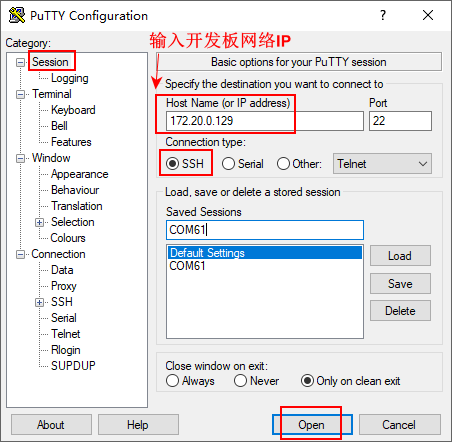
2.4.2 FTP
OK1126B-S/OK1126BJ-S development board supports FTP service and automatically starts when powered on. Once you’ve set the IP address, it can be used as an FTP server. The following describes how to utilize the FTP tool for file transfer.
Path: OK1126B-S/OK1126BJ-S（Linux）User’s profile\tools\FileZilla
Install the file Zilla tool on windows and set it up as shown in the following figure.
Note:
This feature requires connecting the development board to the network cable. Make sure the host IP setting and the client are on the same network segment, ensuring that the host and client are in the same local area netThe username is “forlinx” and the password is “forlinx”. Once logged in successfully, you can perform upload and download operations on the file system under the “/home/forlinx’ directory.”;
The following is tested with the development board IP 172.20.0.129. Please make modifications according to the actual situation. When debugging the serial port terminal, use the following command to make the changes:
ifconfig eth0 172.20.0.129 netmask 255.255.255.0

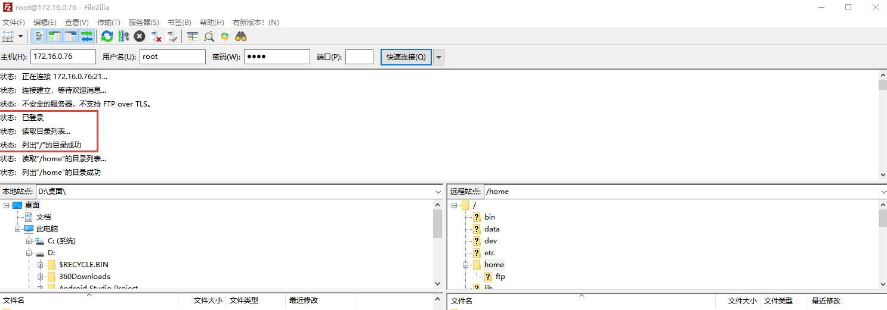
2.5 Screen Switching
It supports two screen interfaces: LCD and MIPI DSI. There are two ways to control screen switching: uboot menu dynamic control and kernel device tree designation.
2.5.2 Kernel Device Tree Specification
This method does not require the connection of a serial terminal, and the system image defaults to the desired configuration selection, which is suitable for mass production. However, we need to manually modify the device tree and regenerate the system image once again
Note: This method has higher priority than the uboot screen selection, and the uboot selection will not take effect after the device tree is modified.
Device tree path: kernel/arch/arm64/boot/dts/rockchip/OK1126B-S-common.dtsi
In the kernel source code, open the device dtsi file and find the following node:

The node has a default disabled state and needs to be changed to an okay enabled node. Change according to screen requirements.
Examples:
Turn on the RGB screen and change the attribute to ‘rgb’.

After saving, recompile to generate the image.
There are many types of MIPI screens, and the existing timing and control words may not meet the requirements, so it is necessary to change the display-timings under the dsi node. However, any node status attribute related to display is handled by default, and the program will automatically control it.
2.6 System Shutdown
In general, you can turn off the power directly, but avoid doing so during important operations like data storage or usage to prevent irreversible file damage. Damaged files may require firmware rewrite. To ensure that data is not completely written, enter the sync command to complete data synchronization before turning off the power.
Note: For products designed based on the SoM, if there are scenarios where accidental power loss causes the system to shut down unexpectedly, measures such as adding power-loss protection can be incorporated into the design.
3. OK1126B-S_QT Function Test
The OK1126B-S/OK1126BJ-S platform supports QT5.15.11 and comes with some built-in Qt applications for testing.
Before the test, please configure the corresponding screen through the uboot menu.
Note: Applications that cannot pop up the on-screen keypad can be connected to a physical keyboard for input.
3.1 4G Test
It supports 4G module (EM05). Insert the 4G module and SIM card while the power is off.
Click on the desktop icon to go to the next level menu:

Click the start button, and the program will automatically enter the dialing process and obtain IP settings, DNS, etc.

After successful dialing, you can use ping to test the serial port during debugging.
3.2 WIFI Test
Click on the desktop icon to go to the next level menu:

Select wlan0, enter the router name(the one connected to wifi) in the SSID column, enter the router password in the PAWD column, click CONNECT to the router via wifi, enter a valid ip in the IP column, and then click ping to see if the currently used wifi network is smooth.

Click ping to test the network after a successful connection.

3.3 Network Configuration Test
Click on the desktop icon to go to the next level menu:
The DHCP mode interface is as follows:
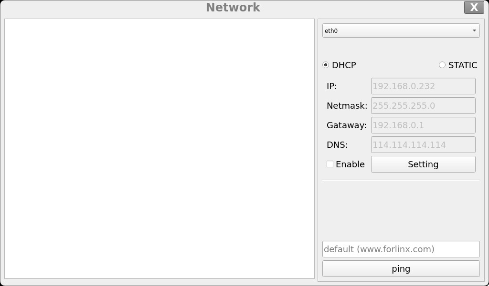
Check DHCP, select the NIC device needing to be configured, and click Apply and Restart Network at the bottom of the interface to restart the network and get the ip automatically.
The STATIC mode interface is as follows:

Select the NIC device to be configured in the interface, and enter the ip to be set in the ip field, enter the subnet mask in the netmask field, the gateway in the geteway field, and DNS in the dns field.
Note: Information such as ip set in STATIC mode is saved to the relevant configuration file of the system so each reboot will use the network information set this time; network information configured in DHCP mode, on the other hand, does not need to care about this; ip addresses are dynamically assigned every reboot.
3.4 Ping Test
Click on the desktop icon to go to the next level menu:

Write the target IP address in the “hostname” column. Click the “ping” button, and the “result” column will display the ping outcome. Click “stop” to end the ping test, and “clear” to erase the information in the “result” column.
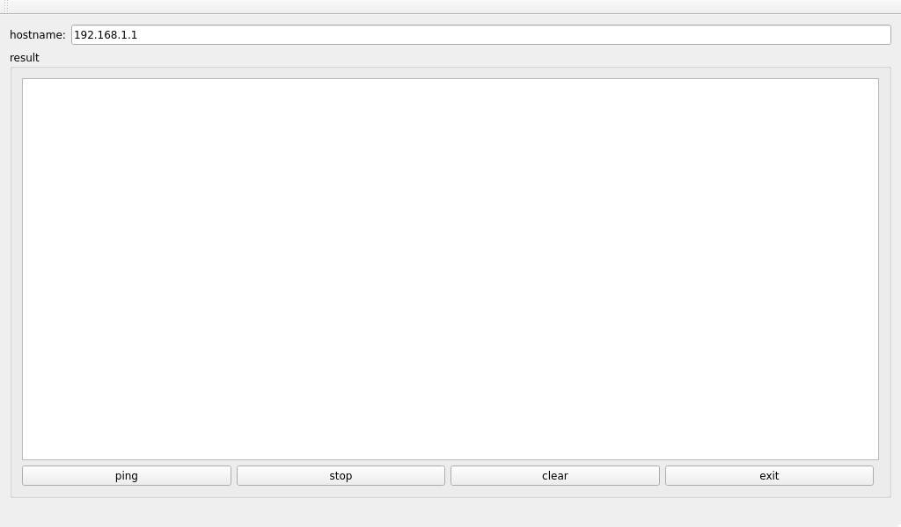
3.5 Watchdog Test
Click on the desktop icon to go to the next level menu:

Click the “start” button and check the “Feed dog” option. At this time, the watchdog function will be activated, and the program will perform the dog - feeding operation. Under normal circumstances, the system will not restart. When the “Feed dog” option is unchecked, the program will stop the dog - feeding operation. After the countdown ends, the system will restart, indicating that the watchdog function is working properly.
3.6 RTC Test
Click on the desktop icon to go to the next level menu:

Select the year, month, day, hour, minute, and second to set the time. After setting, click “apply” to complete the time setting.
With the RTC backup battery installed, power down and restart the development board to confirm that the RTC clock is set successfully.
3.7 UART Test
This test is conducted by short circuiting the TX and RX of UART5. Please refer to section 4.2.6 for specific wiring.
Click on the desktop icon to go to the next level menu:


Click the settings button on the right sidebar (third small gear), and set the serial port parameters as follows:
Relevant Parameter |
Meaning |
|---|---|
Select Serial Port |
Setting the serial port (select UART5, i.e. ttyS5) |
BaudRate |
Set baud rate (115200) |
Data bits |
Set data bits (8 bits) |
Parity |
Set parity bit (no parity) |
Stop bits |
Set stop bit (1 bit) |
Flow control |
Set flow control (no flow control) |
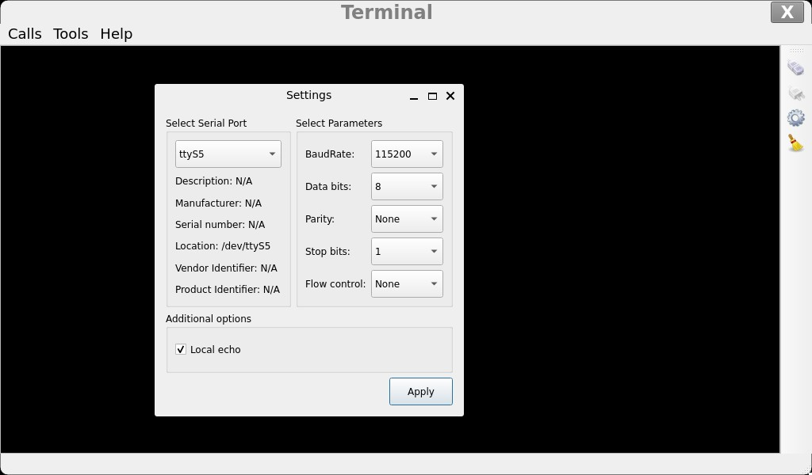
After setting the serial port parameters, click the connection button at the top of the right sidebar (the first button). At this time, the test program can conduct data sending and receiving tests.
You can input in the black area. Each character you input will be displayed twice because the TX and RX are short - circuited, and the sent characters are received back.

3.8 Backlight Test
Click on the desktop icon to go to the next level menu:

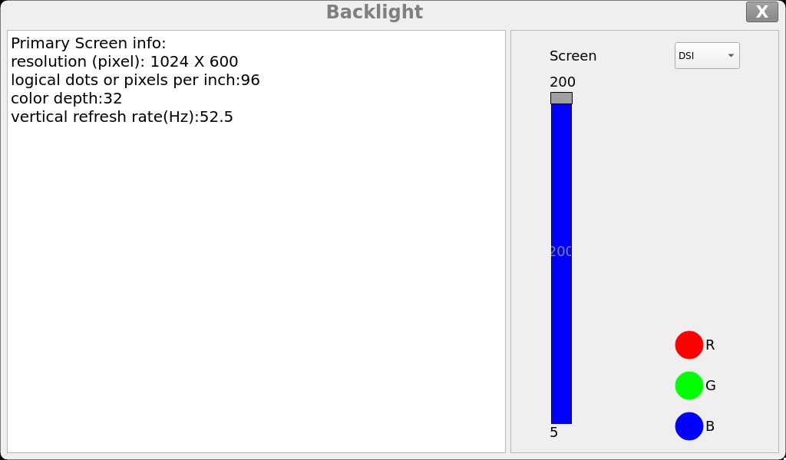
Select “Screen” to specify the screen backlight that needs to be adjusted. Drag the slider on the interface to set the backlight brightness. Level 5 is the lowest brightness, and level 200 is the highest brightness.
If you need to turn off the backlight, refer to section 4.2.13 “LCD backlight adjustment” and set the backlight brightness to 0.
3.9 SPI Test
Click on the desktop icon to go to the next level menu:

Short - circuit the MOSI and MISO of SPI1. For specific wiring, refer to section 4.2.6. Select “SPIDEV” as “spi1” and click the “send” button. The content in the lower input box will be sent out through MOSI and received back through MISO, and will be displayed in the “Receive” box above. At this time, unplug the jumper that short - circuits MOSI and MISO and click the “send” button again. You will find that the “Receive” box receives garbled characters.
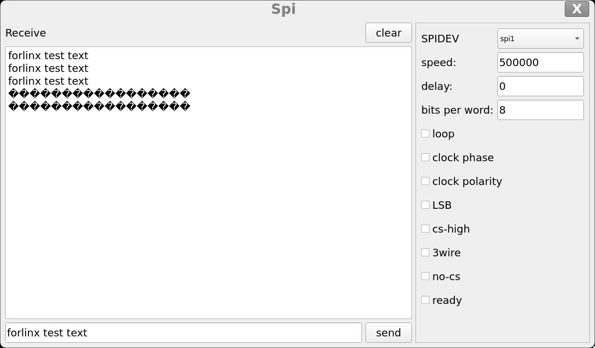
3.10. Playback Test
Click on the desktop icon to go to the next level menu:


Click the button with three dots in the lower - left corner, select the audio file you want to play, and then click “open”. The selected audio will start playing automatically.
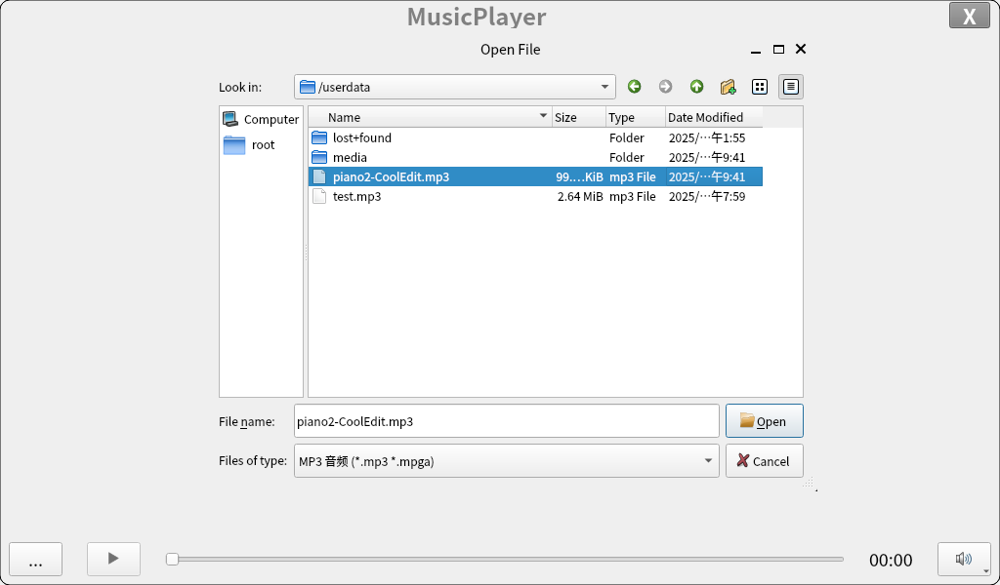

3.11 Video Playback Test
Click on the desktop icon to go to the next level menu:

After opening the application, the video will play automatically.

4. OK1126B - S Command - line Function Test
The OK1126B - S/OK1126BJ - S platform has a rich set of built - in command - line tools for users to use.
4.1 System Information Queries
To view kernel and CPU information:
root@OK1126B-buildroot:/# uname -a
Linux OK1126B-buildroot 6.1.118 #1 SMP Tue Nov 4 10:17:41 UTC 2025 aarch64 GNU/Linux
View environment variable information:
root@OK1126B-buildroot:/# env
SHELL=/bin/bash
GST_V4L2_PREFERRED_FOURCC=NV12:YU12:NV16:YUY2
GST_VIDEO_CONVERT_PREFERRED_FORMAT=NV12:NV16:I420:YUY2
PLAYBIN2_PREFERRED_VIDEOSINK=kmssink
GST_V4L2_USE_LIBV4L2=1
WESTON_DRM_MIN_BUFFERS=2
WL_OUTPUT_VERSION=3
GST_INSPECT_NO_COLORS=1
EDITOR=/bin/vi
WESTON_DRM_KEEP_RATIO=1
GST_DEBUG_NO_COLOR=1
PWD=/root
LOGNAME=root
WESTON_VNC_MIN_BUFFERS=4
HOME=/root
LANG=en_US.UTF-8
ADB_TCP_PORT=5555
LS_COLORS=rs=0:di=01;34:ln=01;36:mh=00:pi=40;33:so=01;35:do=01;35:bd=40;33;01:cd=40;33;01:or=40;31;01:mi=00:su=37;41:sg=30;43:ca=00:tw=30;42:ow=34;42:st=37;44:ex=01;32:*.tar=01;31:*.tgz=01;31:*.arc=01;31:*.arj=01;31:*.taz=01;31:*.lha=01;31:*.lz4=01;31:*.lzh=01;31:*.lzma=01;31:*.tlz=01;31:*.txz=01;31:*.tzo=01;31:*.t7z=01;31:*.zip=01;31:*.z=01;31:*.dz=01;31:*.gz=01;31:*.lrz=01;31:*.lz=01;31:*.lzo=01;31:*.xz=01;31:*.zst=01;31:*.tzst=01;31:*.bz2=01;31:*.bz=01;31:*.tbz=01;31:*.tbz2=01;31:*.tz=01;31:*.deb=01;31:*.rpm=01;31:*.jar=01;31:*.war=01;31:*.ear=01;31:*.sar=01;31:*.rar=01;31:*.alz=01;31:*.ace=01;31:*.zoo=01;31:*.cpio=01;31:*.7z=01;31:*.rz=01;31:*.cab=01;31:*.wim=01;31:*.swm=01;31:*.dwm=01;31:*.esd=01;31:*.avif=01;35:*.jpg=01;35:*.jpeg=01;35:*.mjpg=01;35:*.mjpeg=01;35:*.gif=01;35:*.bmp=01;35:*.pbm=01;35:*.pgm=01;35:*.ppm=01;35:*.tga=01;35:*.xbm=01;35:*.xpm=01;35:*.tif=01;35:*.tiff=01;35:*.png=01;35:*.svg=01;35:*.svgz=01;35:*.mng=01;35:*.pcx=01;35:*.mov=01;35:*.mpg=01;35:*.mpeg=01;35:*.m2v=01;35:*.mkv=01;35:*.webm=01;35:*.webp=01;35:*.ogm=01;35:*.mp4=01;35:*.m4v=01;35:*.mp4v=01;35:*.vob=01;35:*.qt=01;35:*.nuv=01;35:*.wmv=01;35:*.asf=01;35:*.rm=01;35:*.rmvb=01;35:*.flc=01;35:*.avi=01;35:*.fli=01;35:*.flv=01;35:*.gl=01;35:*.dl=01;35:*.xcf=01;35:*.xwd=01;35:*.yuv=01;35:*.cgm=01;35:*.emf=01;35:*.ogv=01;35:*.ogx=01;35:*.aac=00;36:*.au=00;36:*.flac=00;36:*.m4a=00;36:*.mid=00;36:*.midi=00;36:*.mka=00;36:*.mp3=00;36:*.mpc=00;36:*.ogg=00;36:*.ra=00;36:*.wav=00;36:*.oga=00;36:*.opus=00;36:*.spx=00;36:*.xspf=00;36:*~=00;90:*#=00;90:*.bak=00;90:*.old=00;90:*.orig=00;90:*.part=00;90:*.rej=00;90:*.swp=00;90:*.tmp=00;90:*.dpkg-dist=00;90:*.dpkg-old=00;90:*.ucf-dist=00;90:*.ucf-new=00;90:*.ucf-old=00;90:*.rpmnew=00;90:*.rpmorig=00;90:*.rpmsave=00;90:
WESTON_FREEZE_DISPLAY=/tmp/.freeze_weston
WAYLANDSINK_FORCE_DMABUF=1
GST_V4L2SRC_DEFAULT_DEVICE=/dev/video-camera0
QT_QPA_PLATFORM=wayland
AUTOVIDEOSINK_PREFERRED=kmssink
USB_FW_VERSION=0x0310
TERM=xterm-color
USER=root
ADBD_SHELL=/bin/bash
GST_V4L2SRC_RK_DEVICES=_mainpath:_selfpath:_bypass:_scale
WESTON_DRM_MIRROR=1
SHLVL=1
GST_VIDEO_FLIP_USE_RGA=1
USB_FUNCS=adb
WESTON_DISABLE_ATOMIC=1
USB_MANUFACTURER=Rockchip
USB_PRODUCT=rk3xxx
XDG_RUNTIME_DIR=/var/run
USB_VENDOR_ID=0x2207
GST_VIDEO_CONVERT_USE_RGA=1
PATH=/usr/bin:/usr/sbin
GST_V4L2SRC_MAX_RESOLUTION=3840x2160
GST_VIDEO_DECODER_QOS=0
_=/usr/bin/env
4.2 Frequency Test
Note: This process takes cpu0 as an example, and the actual process of cpu1, cpu2, and cpu3 will be changed at the same time.
1. All cpufreq governor types supported in the current kernel:
root@OK1126B-buildroot:/# cat /sys/devices/system/cpu/cpu0/cpufreq/scaling_available_governors
interactive conservative ondemand userspace powersave performance schedutil
The userspace indicates user mode, in which other users’ programs can adjust the CPU frequency.
2. To view the frequency gear supported by the current CPU
Commercial level CPU（RV1126B）：
root@OK1126B-buildroot:/# cat /sys/devices/system/cpu/cpu0/cpufreq/scaling_available_frequencies
594000 816000 1008000 1200000 1296000 1416000 1512000 1608000
Industrial grade CPU（RV1126BJ）：
root@OK1126B-buildroot:/# cat /sys/devices/system/cpu/cpu0/cpufreq/scaling_available_frequencies
594000 816000 1008000 1200000 1296000
3. Set to user mode and modify the frequency to 1296000:
root@OK1126B-buildroot:/# echo userspace > /sys/devices/system/cpu/cpu0/cpufreq/scaling_governor
root@OK1126B-buildroot:/# echo 1296000 > /sys/devices/system/cpu/cpu0/cpufreq/scaling_setspeed
View the modified current frequency:
root@OK1126B-buildroot:/# cat /sys/devices/system/cpu/cpu0/cpufreq/cpuinfo_cur_freq
1296000
4.3 Temperature Test
View the temperature value:
root@OK1126B-buildroot:/# cat /sys/class/thermal/thermal_zone0/temp
41860
The temperature value is 41°C.
4.4 DDR Bandwidth Test
root@OK1126B-buildroot:/# memory_bandwidth.sh
L1 cache bandwidth rd test with # process
0.008192 22618.09
0.008192 22817.50
0.008192 22800.99
0.008192 22875.47
0.008192 22798.30
L2 cache bandwidth rd test
0.131072 10272.25
0.131072 10210.02
0.131072 10246.21
0.131072 10302.29
0.131072 10120.04
Main mem bandwidth rd test
52.43 2717.08
52.43 2592.28
52.43 2673.30
52.43 2752.60
52.43 2744.82
L1 cache bandwidth wr test with # process
0.008192 20150.45
0.008192 20125.47
0.008192 20118.17
0.008192 20140.09
0.008192 20162.06
L2 cache bandwidth wr test
0.131072 10738.14
0.131072 11170.64
0.131072 10887.99
0.131072 11243.43
0.131072 10789.84
Main mem bandwidth wr test
52.43 2083.73
52.43 2116.11
52.43 2147.58
52.43 2124.17
52.43 2147.93
L1 cache bandwidth rdwr test with # process
0.008192 10201.39
0.008192 10194.62
0.008192 10205.02
0.008192 10108.33
0.008192 10203.39
L2 cache bandwidth rdwr test
0.131072 7311.63
0.131072 7808.02
0.131072 7750.06
0.131072 7664.32
0.131072 7333.03
Main mem bandwidth rdwr test
52.43 2120.22
52.43 2112.36
52.43 2117.65
52.43 2142.31
52.43 2142.31
L1 cache bandwidth cp test with # process
0.008192 12951.42
0.008192 13002.95
0.008192 13002.08
0.008192 12863.30
0.008192 12970.17
L2 cache bandwidth cp test
0.131072 4562.78
0.131072 4693.05
0.131072 4526.98
0.131072 4435.82
0.131072 4673.00
Main mem bandwidth cp test
52.43 938.37
52.43 939.85
52.43 937.79
52.43 939.13
52.43 908.83
L1 cache bandwidth frd test with # process
0.008192 5202.14
0.008192 5119.63
0.008192 5188.32
0.008192 5137.90
0.008192 5201.76
L2 cache bandwidth frd test
0.131072 4501.13
0.131072 4503.63
0.131072 4601.51
0.131072 4513.14
0.131072 4601.11
Main mem bandwidth frd test
52.43 2708.52
52.43 2728.53
52.43 2731.52
52.43 2706.84
52.43 2690.04
L1 cache bandwidth fwr test with # process
0.008192 16452.70
0.008192 16717.36
0.008192 17988.92
0.008192 16309.58
0.008192 17020.84
L2 cache bandwidth fwr test
0.131072 8805.87
0.131072 9297.64
0.131072 9567.12
0.131072 11108.70
0.131072 9112.35
Main mem bandwidth fwr test
52.43 6525.87
52.43 6579.92
52.43 6393.76
52.43 6560.98
52.43 6566.73
L1 cache bandwidth fcp test with # process
0.008192 3266.18
0.008192 3275.91
0.008192 3281.87
0.008192 3277.12
0.008192 3260.31
L2 cache bandwidth fcp test
0.131072 3096.56
0.131072 3110.59
0.131072 3106.08
0.131072 3128.10
0.131072 3107.87
Main mem bandwidth fcp test
52.43 1740.72
52.43 1697.71
52.43 1738.99
52.43 1750.37
52.43 1707.89
L1 cache bandwidth bzero test with # process
0.008192 6635.56
0.008192 6657.67
0.008192 6627.97
0.008192 6651.70
0.008192 6571.29
L2 cache bandwidth bzero test
0.131072 6567.88
0.131072 6559.52
0.131072 6542.97
0.131072 6323.05
0.131072 6489.47
Main mem bandwidth bzero test
52.43 6545.42
52.43 6555.24
52.43 6570.85
52.43 6551.96
52.43 6524.24
L1 cache bandwidth bcopy test with # process
0.008192 7381.98
0.008192 7335.50
0.008192 7401.05
0.008192 7368.65
0.008192 7394.05
L2 cache bandwidth bcopy test
0.131072 6442.06
0.131072 6306.39
0.131072 6794.02
0.131072 6623.53
0.131072 6770.45
Main mem bandwidth bcopy test
52.43 1595.28
52.43 1600.98
52.43 1602.59
52.43 1619.22
52.43 1681.70
The LPDDR4 write bandwidth of OK1126B-S/OK1126BJ-S is approximately 2100M/s, and the read bandwidth is approximately 2700M/s.
4.5 Serial Port Test
The UART of OK1126B - S/OK1126BJ - S supports odd and even parity, 8 data bits, and 1 stop bit.
Before conducting the UART loop - back test, please short - circuit the serial port to be tested first. On the schematic diagram of the carrier board of the OK1126B - S/OK1126BJ - S platform, there are a total of 3 serial ports marked and led out, namely UART0, UART2, and UART5. Among them, UART0 is the debugging serial port, and UART2 is the Bluetooth serial port. The serial port available to users is UART5. UART5 uses TTL level, and its corresponding device name on the development board is ttyS5. Here, taking the test of the UART5 serial port as an example, short - circuit the sending and receiving pins of UART5 according to the schematic diagram of the development board, which correspond to pins 8 and 10 of P16 respectively.

Turn on the test program after the short circuit is completed.
root@OK1126B-buildroot:/# fltest_uarttest -d /dev/ttyS5
Welcome to uart test
Send test data:
forlinx_uart_test.1234567890...
Read Test Data finished,Read:
forlinx_uart_test.1234567890...
If the serial port prints the above content after execution, it indicates that the serial port communication is basically normal.
4.6 SPI Test
1 x SPI interface is led out from the carrier board. By default, it is configured as spidev in software for loop - back testing. When testing, refer to the schematic for shorting MOSI (PIN19) and MISO (PIN21), and then use the commands below to test each.
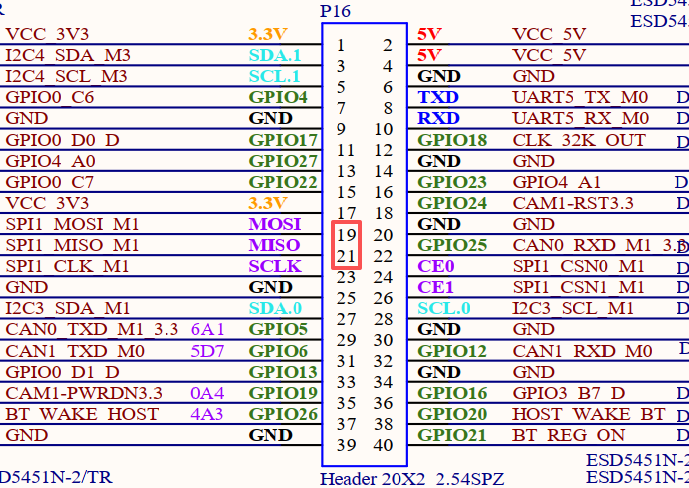
When SPI1_MOSI and SPI1_MISO are short - circuited, execute the test command:
root@OK1126B-buildroot:/# fltest_spidev_test -D /dev/spidev1.0
spi mode: 0
bits per word: 8
max speed: 500000 Hz (500 KHz)
FF FF FF FF FF FF
FF FF FF FF FF FF
FF FF FF FF FF FF
FF FF FF FF FF FF
FF FF FF FF FF FF
FF FF FF FF FF FF
FF FF
Short circuit the SPI1_MOSI and SPI1_MISO, then execute the test command:
root@OK1126B-buildroot:/# fltest_spidev_test -D /dev/spidev1.0
spi mode: 0
bits per word: 8
max speed: 500000 Hz (500 KHz)
FF FF FF FF FF FF
40 00 00 00 00 95
FF FF FF FF FF FF
FF FF FF FF FF FF
FF FF FF FF FF FF
DE AD BE EF BA AD
F0 0D
4.7 Watchdog Test
The watchdog is a commonly used function in embedded systems. The device node of the watchdog in OK1126B - S/OK1126BJ - S is /dev/watchdog0. This test provides two test procedures, and the user can choose one of them to test according to the actual situation.
Start fltest_watchdog, set the reset time to 10s, and feed the dog regularly;
root@OK1126B-buildroot:/# fltest_watchdog
Watchdog Ticking Away!
This command turns on the watchdog and performs a feed, so the system does not reboot.
Note: When ctrl + C is used to end the test program, the system will reset after 10 seconds. If you do not want to reset, please input within 10 seconds after ctrl + C:
root@OK1126B-buildroot:/# fltest_watchdog -d
Watchdog card disabled. //Turn off the watchdog
Start fltestw_watchdog, set the reset time to 10 seconds, and do not feed the dog.
root@OK1126B-buildroot:/# fltest_watchdog -e
[ 181.507014] watchdog: watchdog0: watchdog did not stop!
Watchdog card enabled.
This command turns on the watchdog, but does not feed the dog, and the system reboots after 10 seconds.
4.8 WiFi Test
OK1126B - S/OK1126BJ - S supports the on - board 6221ASRC (RTL8821CS) by default, and supports both STA and AP modes.
4.8.1 STA Mode
Before using the wifi function, the following steps are required for configuration:
Step 1:
Assume that the SSID name of the Wifi hotspot is ChinaNet-Jvgv and the password is asdasd123
Enter the following command in the development board terminal:
root@OK1126B-buildroot:/# fltest_wifi.sh -i wlan0 -s "ChinaNet-Jvgv" -p "asdasd123"
In the above command,
-i wlan0, the specific node corresponding to each module should be determined before use, depending on the actual situation.
-s The actual wifi hotspot name of the connection;
-p followed by the parameter Password refers to the password of the actual wifi hotspot to be connected. If the current hotspot does not have a password, the parameter after -p is NONE.
Step 2:
Check whether it can ping the external network and enter the following command in the terminal:
root@OK1126B-buildroot:/# ping -I wlan0 www.forlinx.com
PING www.forlinx.com (220.181.111.188): 56 data bytes
64 bytes from 220.181.111.188: seq=0 ttl=57 time=5.562 ms
64 bytes from 220.181.111.188: seq=1 ttl=57 time=5.884 ms
64 bytes from 220.181.111.188: seq=2 ttl=57 time=4.595 ms
64 bytes from 220.181.111.188: seq=3 ttl=57 time=4.323 ms
64 bytes from 220.181.111.188: seq=4 ttl=57 time=4.682 ms
64 bytes from 220.181.111.188: seq=5 ttl=57 time=3.798 ms
If you want to stop, you need to press Ctrl + C to ping, indicating that the network can be used normally at this time.
4.8.2 AP Mode
Before using the hotspot function, you need to connect and configure the network port to ensure that the network port can be connected to the Internet. As follows:
root@OK1126B-buildroot:/# fltest_hostap.sh
Stopping dnsmasq: FAIL
Starting dnsmasq: OK
done!
root@OK1126B-buildroot:/# rfkill: Cannot open RFKILL control device
wlan0: interface state UNINITIALIZED->ENABLED
wlan0: AP-ENABLED
WiFi Hotspot Name: OK1126B_WIFI_2.4G_AP
Password: 12345678
At this time, the mobile phone can connect to this hotspot and connect to the Internet.
4.9 Bluetooth Test
The 6221ASRC (RTL8821CS) on the carrier board integrates the Bluetooth function. This section demonstrates file transfer between a mobile phone and the development board via Bluetooth.
root@OK1126B-buildroot:/# bluetoothctl //Open the bluez Bluetooth tool
hci0 new_settings: powered bondable ssp br/edr le secure-conn
Agent registered
[CHG] Controller 78:BE:81:20:30:65 Pairable: yes
[bluetooth]# power on //Start the Bluetooth device
Changing power on succeeded
[bluetooth]# pairable on //Set to pairing mode
Changing pairable on succeeded
[bluetooth]# agent on //Start the agent
Agent is already registered
[bluetooth]# default-agent //Set the current agent as the default
Default agent request successful
[bluetooth]# discoverable on //Set to discoverable mode
hci0 new_settings: powered connectable bondable ssp br/edr le secure-conn
hci0 new_settings: powered connectable discoverable bondable ssp br/edr le secure-conn
Changing discoverable on succeeded
[CHG] Controller 78:BE:81:20:30:65 Discoverable: yes
[NEW] Device C4:FE:5B:17:C7:78 OPPO Reno3 元气版 5G
[CHG] Device C4:FE:5B:17:C7:78 Modalias: bluetooth:v001Dp1200d1436
[CHG] Device C4:FE:5B:17:C7:78 UUIDs: 00001105-0000-1000-8000-00805f9b34fb
[CHG] Device C4:FE:5B:17:C7:78 UUIDs: 0000110a-0000-1000-8000-00805f9b34fb
[CHG] Device C4:FE:5B:17:C7:78 UUIDs: 0000110c-0000-1000-8000-00805f9b34fb
[CHG] Device C4:FE:5B:17:C7:78 UUIDs: 0000110e-0000-1000-8000-00805f9b34fb
[CHG] Device C4:FE:5B:17:C7:78 UUIDs: 00001112-0000-1000-8000-00805f9b34fb
[CHG] Device C4:FE:5B:17:C7:78 UUIDs: 00001115-0000-1000-8000-00805f9b34fb
E:5B:17:C7:78 UUIDs: 0000111f-0000-1000-8000-00805f9b34fbb34fb
[CHG] Device C4:FE:5B:17:C7:78 UUI-8000-00805f9b34fb
[CHG] Device C4:FE:5B:17:C7:78-1000-8000-00805f9b34fb
[CHG] Device C4:FE:5B:17:C7:700-1000-8000-00805f9b34fb
[OPPO Reno3 元气版 5G]#vice C4:FE:5B:17:C7:78 UUIDs: 0000aa15-0000-1000-8000-008[CHG] Device C4:FE:5B:17:C7:95c-9f4f-bb80a90cdf00
ice C4:FE:5B:17:C7:78 ServicesResolved: yes
[CHG] Device C4:FE:5B:17:C7:78 Paired: yes
[CHG] Controller 36:DC:25:54:7C:CB Discoverable: no
[CHG] Device C4:FE:5B:17:C7:78 ServicesResolved: no
[CHG] Device C4:FE:5B:17:C7:78 Connected: no
After successful pairing, the files on the mobile phone can be shared to the development board through Bluetooth.
Type quit to exit bluetoothctl. The received file is located in the/root directory.
[bluetooth]# quit
root@OK1126B-buildroot:/# ls /root/
wx_camera_1581992646090.jpg
At the same time, you can also send the files on the development board to the mobile phone.
root@OK1126B-buildroot:/# fltest_obexctl.sh
[obex]# connect C4:FE:5B:17:C7:78
Attempting to connect to C4:FE:5B:17:C7:78
[NEW] Session /org/bluez/obex/client/session0 [default]
[NEW] ObjectPush /org/bluez/obex/client/session0
Connection successful
[C4:FE:5B:17:C7:78]# send /home/forlinx/audio/test.mp3
Attempting to send /home/forlinx/audio/test.mp3 to /org/bluez/obex/client/session0
[NEW] Transfer /org/bluez/obex/client/session0/transfer0
Transfer /org/bluez/obex/client/session0/transfer0
Status: queued
Name: test.mp3
Size: 4818092
Filename: /home/forlinx/audio/test.mp3
Session: /org/bluez/obex/client/session0
[CHG] Transfer /org/bluez/obex/client/session0/transfer0 Status: active
[CHG] Transfer /org/bluez/obex/client/session0/transfer0 Transferred: 8046 (@8KB/s 09:57)
Note: The files received by some manufacturers’ mobile phones must have suffixes, otherwise they will be rejected by the Android system. Therefore, when testing, please try to use files with suffix names for testing.
4.10 RTC Function Test
RTC testing is mainly done by using the date and hwclock tools to set the software and hardware time. The test checks if the software clock can read and synchronize with the RTC clock when the development board is powered off and on again (Note: Make sure that the button battery is already installed on the board).
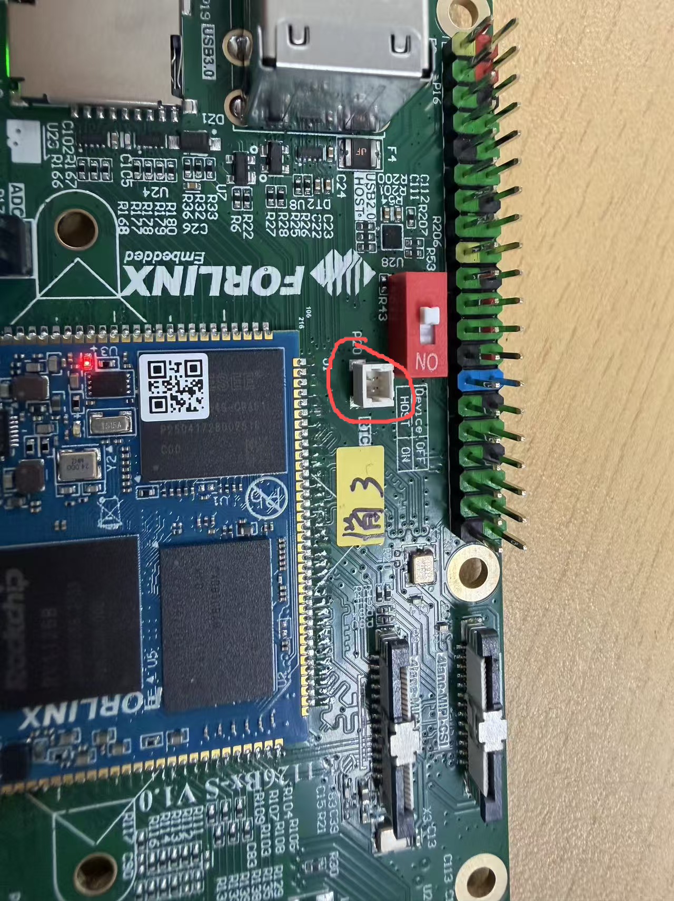
root@OK1126B-buildroot:/# date -s "2022-2-9 10:50:00" //Set the time
Wed Feb 9 10:50:00 UTC 2022
root@OK1126B-buildroot:/# date //Read the time
Wed Feb 9 10:51:00 UTC 2022
root@OK1126B-buildroot:/# hwclock -w -u //Write system time, calculate time zone, to RTC
root@OK1126B-buildroot:/# hwclock -r //View the hardware time
Wed Feb 9 02:50:14 2022 0.000000 seconds
//Restart the development board, read the system time after entering the system, check whether it is the same as the set time, pay attention not to access the external network, otherwise it will automatically time.
root@OK1126B-buildroot:/# date
Wed Feb 9 10:52:00 UTC 2022
4.11 USB 2.0/USB3.0
OK1126B - S/OK1126BJ - S supports one USB2.0 and one USB3.0 interface. You can connect USB devices to any of the on - board USB HOST interfaces, and hot - plugging is supported. It also includes a TYPE - C interface. In Device mode, it can be used for flashing the system. When the power is off, set the S2 DIP switch to OFF. When connecting the OK1126B - S/OK1126BJ - S to a PC using a Type - C cable, it is configured in Device mode; when the power is off, set the S2 DIP switch to ON, it is configured in Host mode, and devices such as USB flash drives can be inserted into the USB3.0 interface.
The USB3.0 and OTG are multiplexed and can be switched using the DIP switch. When using the USB3.0 interface, please make sure the DIP switch is in the ON position. Here, the example of mounting a USB flash drive is used for demonstration.

The lower USB3.0 and OTG are multiplexed and can be switched using the DIP switch. When using the USB3.0 interface, please make sure the DIP switch is in the ON position.
The terminal prints information about the USB flash drive, and since many types of USB flash drives exist, the information displayed may vary:
Step 1: After the development board has started, connect the USB flash drive to the USB host interface on the development board.
Serial port information (Since the default kernel print level is 1, these prints will not actually be displayed. You need to use dmesg to view them):
root@OK1126B-buildroot:/# [12775.292820] usb 1-1: new high-speed USB device number 3 using ehci-platform
[12775.453656] usb 1-1: New USB device found, idVendor=0781, idProduct=5567, bcdDevice= 1.00
[12775.453669] usb 1-1: New USB device strings: Mfr=1, Product=2, SerialNumber=3
[12775.453676] usb 1-1: Product: Cruzer Blade
[12775.453682] usb 1-1: Manufacturer: SanDisk
[12775.453687] usb 1-1: SerialNumber: 03000310123123023701
[12775.454149] usb-storage 1-1:1.0: USB Mass Storage device detected
[12775.454487] scsi host0: usb-storage 1-1:1.0
[12776.457856] scsi 0:0:0:0: Direct-Access SanDisk Cruzer Blade 1.00 PQ: 0 ANSI: 6
[12776.476175] sd 0:0:0:0: [sda] 60125184 512-byte logical blocks: (30.8 GB/28.7 GiB)
[12776.477712] sd 0:0:0:0: [sda] Write Protect is off
[12776.478837] sd 0:0:0:0: [sda] Write cache: disabled, read cache: enabled, doesn't support DPO or FUA
[12776.502348] sda: sda1
[12776.502772] sd 0:0:0:0: [sda] Attached SCSI removable disk
[12777.398167] FAT-fs (sda1): utf8 is not a recommended IO charset for FAT filesystems, filesystem will be case sensitive!
[12777.428876] FAT-fs (sda1): Volume was not properly unmounted. Some data may be corrupt. Please run fsck.
Step 2: View the mount directory
root@OK1126B-buildroot:/# ls /run/media/
Step 3: View the contents of the USB flash disk:
root@OK1126B-buildroot:/# ls -l /run/media/sda1/
drwxrwx--- 3 root disk 8192 Mar 4 2021 Music
Before reading and writing, you need to pay attention to the frequency of the CPU.
Write test:
root@OK1126B-buildroot:/# dd if=/dev/zero of=/run/media/sda1/test.bin bs=1M count=100 conv=fsync oflag=direct
100+0 records in
100+0 records out
104857600 bytes (105 MB, 100 MiB) copied, 9.9486 s, 10.5 MB/s
//The write speed is limited to the specific storage device.
Read test：
root@OK1126B-buildroot:/# dd if=/run/media/sda1/test.bin of=/dev/null bs=1M iflag=direct
100+0 records in
100+0 records out
104857600 bytes (105 MB, 100 MiB) copied, 3.38621 s, 31.0 MB/s
4.12 Screen Backlight Adjustment
Backlight level range (0–255), maximum level 255, 0 indicating turn off. Enter the system and enter the following command in the terminal to perform the backlight test.
View the current screen backlight values:
root@OK1126B-buildroot:/# cat /sys/class/backlight/backlight-dsi/brightness //View MIPI-DSI Screen backlight values
200
root@OK1126B-buildroot:/# cat /sys/class/backlight/backlight-lcd/brightness //View RGB screen backlight values
200
2. Backlight is off:
root@OK1126B-buildroot:/# echo 0 > /sys/class/backlight/backlight-dsi/brightness //Turn off the MIPI-DSI screen backlight
root@OK1126B-buildroot:/# echo 0 > /sys/class/backlight/backlight-lcd/brightness //Turn off RGB screen backlight
3. LCD backlight is on:
root@OK1126B-buildroot:/# echo 255 > /sys/class/backlight/backlight-dsi/brightness //Turn on LVDS backlight
root@OK1126B-buildroot:/# echo 255 > /sys/class/backlight/backlight-lcd/brightness //Turn on dsi backlight
4.13 TF Test
Insert the TF card into the slot on the carrier board. Under normal circumstances, the following print information will appear on the terminal of the development board (You need to set the log level to 7 in the Uboot menu to see it):
root@OK1126B-buildroot:/# [13658.430039] mmc_host mmc1: Bus speed (slot 0) = 198000000Hz (slot req 200000000Hz, actual 198000000HZ div = 0)
[13658.440111] dwmmc_rockchip 21d60000.mmc: Successfully tuned phase to 135
[13658.440129] mmc1: new ultra high speed SDR104 SDHC card at address aaaa
[13658.441331] mmcblk1: mmc1:aaaa SA16G 14.8 GiB
[13658.444704] mmcblk1: p1
[13658.558032] FAT-fs (mmcblk1p1): utf8 is not a recommended IO charset for FAT filesystems, filesystem will be case sensitive!
[13658.562004] FAT-fs (mmcblk1p1): Volume was not properly unmounted. Some data may be corrupt. Please run fsck.
By default, the TF card is mounted to the file system/run/media/mmcblk1p1/directory
root@OK1126B-buildroot:/# mount | grep mmcblk1 //View the mount directory
/dev/mmcblk1p1 on /run/media/mmcblk1p1 type vfat (rw,relatime,fmask=0022,dmask=0022,codepage=936,iocharset=utf8,shortname=mixed,errors=remount-ro)
Write test:
root@OK1126B-buildroot:/# dd if=/dev/zero of=/run/media/mmcblk1p1/test.bin bs=1M count=100 oflag=direct
100+0 records in
100+0 records out
104857600 bytes (105 MB, 100 MiB) copied, 2.67567 s, 39.2 MB/s
Read test:
root@OK1126B-buildroot:/# dd if=/run/media/mmcblk1p1/test.bin of=/dev/null bs=1M iflag=direct
100+0 records in
100+0 records out
104857600 bytes (105 MB, 100 MiB) copied, 1.17493 s, 89.2 MB/s
4.14 EMMC Test
The OK1126B-S/OK1126BJ-S platform eMMC runs in HS400 mode 200MHz clock by default. The following is a simple eMMC read/write speed test: taking the read/write ext4 file system as an example.
root@OK1126B-buildroot:/# dd if=/dev/zero of=/test bs=1M count=500 conv=fsync oflag=direct //Write test
500+0 records in
500+0 records out
524288000 bytes (524 MB, 500 MiB) copied, 3.22593 s, 163 MB/s
root@OK1126B-buildroot:/# dd if=/test of=/dev/null bs=1M iflag=direct //Read test
500+0 records in
500+0 records out
524288000 bytes (524 MB, 500 MiB) copied, 3.02095 s, 174 MB/s
4.15 Ethernet Configuration
The OK1126B-S/OK1126BJ-S board is equipped with 1 x Gigabit and 1 x Fast Ethernet network card. Due to the main controller having only one Ethernet controller, only one card can be used at a time. The Gigabit card is the factory default. Switch between the two via the U - Boot menu; see Section 2.5.1 for steps.
4.15.1 IP Fix Method
Note: This method fixes network IP. After use, network card gets normal IP. If ping fails, check multiple network cards in same Linux segment. Adjust routing or use distinct segments.
Development board IP: 192.168.0.232
Router IP: 192.168.0.1
Subnet mask: 255.255.255.0
Power up the development board and execute the following command
root@OK1126B-buildroot:/# vi /etc/systemd/network/10-eth0.network //Open the configuration file
[Match]
Name=eth0 // Specify the network card for which a fixed IP address is required
KernelCommandLine=!root=/dev/nfs
[Network]
Address=192.168.0.232/24 //Specify the fixed IP address and subnet mask
Gateway=192.168.0.1 //Specify the gateway
DNS=114.114.114.114 //Specify the DNS server
//After saving and exiting, restart the board or restart the configuration:
root@OK1126B-buildroot:/# ifdown -a //Stop using the configuration
root@OK1126B-buildroot:/# ifup -a //Enable the configuration
4.15.2 Automatic IP Acquisition Method
root@OK1126B-buildroot:/# vi /etc/systemd/network/10-eth0.network //Open the configuration file
[Match]
Name=eth0
KernelCommandLine=!root=/dev/nfs
[Network]
DHCP=yes
//After saving and exiting, restart the board or restart the configuration
root@OK1126B-buildroot:/# ifdown -a //Stop using the configuration
root@OK1126B-buildroot:/# ifup -a //Enable the configuration
4.16 Play/Record Test
There is a white XH2.54-2P socket on the development board, labeled as P12, which can drive an 8Ω speaker with a maximum output power of 1.3W. Before conducting a sound playback test, please insert the speaker into the corresponding slot on the carrier board and use the following commands for testing:
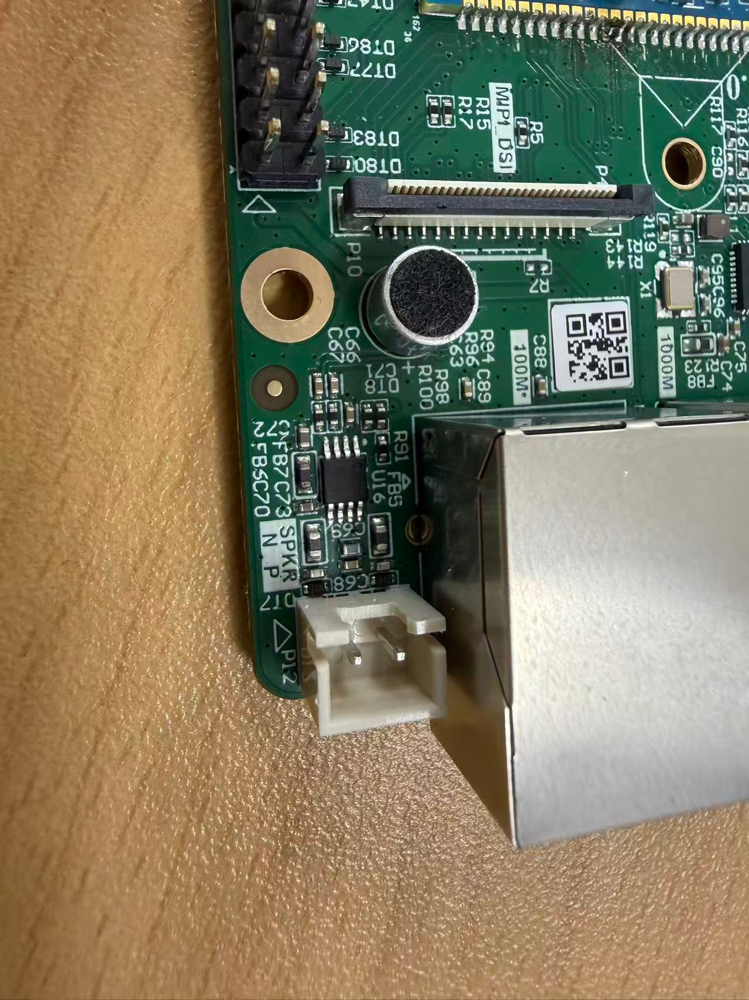
root@OK1126B-buildroot:/# gst-play-1.0 /userdata/piano2-CoolEdit.mp3
//Speaker audio playback test
Press 'k' to see a list of keyboard shortcuts.
Now playing /userdata/piano2-CoolEdit.mp3
Redistribute latency...
Redistribute latency...
0:00:06.3 / 0:00:06.3
Reached end of play list.
root@OK1126B-buildroot:/# arecord -c 2 -r 44100 -f cd mic.wav
//Recording test, ctrl + C key to stop recording。
Recording WAVE 'mic.wav' : Signed 16 bit Little Endian, Rate 44100 Hz, Stereo
Aborted by signal Interrupt...
root@OK1126B-buildroot:/# ls //The generated recording file can be seen in the current directory.
bin data etc klogd.pid lib64 lost+found mic.wav oem proc root sbin syslogd.pid target tmp usr vendor
busybox.fragment dev info lib linuxrc media mnt opt rockchip-test run sys system test userdata var
4.17 Sleep & Wake-up Test
OK1126B-S/OK1126BJ-S Linux platform supports sleep wakeup.
Press the power button （PWRON）for a short time to enter hibernation, and the printed information is as follows:
root@OK1126B-buildroot:/# INFO: BL31: v2.12(release):v2.12.0-54-g46bfa4121:derrick.huang, fwver: v1.07
INFO: cfg=0x1000608, sleeptimes:1
INFO: logoff
INFO: pmualive_32k
INFO: dis_osc
INFO: 32k ext
INFO: sleep_pin: 0x5 0x1
INFO: io_0: iomux-0, pull-2, dir-0, lvl-0
INFO: io_2: iomux-0, pull-2, dir-0, lvl-0
INFO: io_3: iomux-0, pull-0, dir-0, lvl-0
INFO: io_4: iomux-0, pull-2, dir-0, lvl-0
INFO: io_5: iomux-0, pull-1, dir-0, lvl-0
INFO: io_6: iomux-0, pull-2, dir-0, lvl-0
INFO: io_7: iomux-0, pull-1, dir-0, lvl-0
INFO: io_8: iomux-0, pull-2, dir-0, lvl-0
INFO: io_9: iomux-0, pull-2, dir-0, lvl-0
INFO: io_10: iomux-0, pull-2, dir-0, lvl-0
INFO: io_11: iomux-0, pull-2, dir-0, lvl-0
INFO: io_12: iomux-0, pull-2, dir-0, lvl-0
INFO: io_20: iomux-0, pull-2, dir-0, lvl-0
INFO: io_21: iomux-0, pull-2, dir-0, lvl-0
INFO: io_22: iomux-0, pull-2, dir-0, lvl-0
INFO: io_23: iomux-0, pull-2, dir-0, lvl-0
INFO: io_24: iomux-0, pull-2, dir-0, lvl-0
INFO: io_25: iomux-0, pull-2, dir-0, lvl-0
INFO: idle,pd(0x500,0x5)
INFO: GPIO0: 0xffff 0xffff 0xffff 0xfffe 0x0 0xfed0e824
INFO: IRQ_EN: 60 56 52 48 44 40 36 32 88 74 72 99 97 260
INFO: IRQ_PED:
012abcde34567
INFO: PMU0_PWR(0x0)
PMU1_PWR(0x2201) PMU1_WAKEUP_INT(0x10)
PMU2_BUS_IDLE_ST(0x700) PMU2_PWR_GT_ST(0x7)
PMU2_BUS_IDLE(0x8a0) PMU2_PWR_GT(0x0)
PMU1_CRU_PWR(0x1ef 0x1fe)
PMU1_DDR_PWR(0x6b 0x0)
PMU1_PLLPD(0xf)
a
Short press the power button to wake up
4.18 NPU Test
OK1126B-S/OK1126BJ-S platform supports NPU, which can be tested with the following command.
root@OK1126B-buildroot:/# rknn_common_test /usr/share/model/RV1126B/mobilenet_v1.rknn /usr/share/model/cat_224x224.jpg
rknn_api/rknnrt version: 2.3.2 (429f97ae6b@2025-04-09T09:09:27), driver version: 0.9.8
model input num: 1, output num: 1
input tensors:
index=0, name=input, n_dims=4, dims=[1, 224, 224, 3], n_elems=150528, size=150528, fmt=NHWC, type=INT8, qnt_type=AFFINE, zp=0, scale=0.007812
output tensors:
index=0, name=MobilenetV1/Predictions/Reshape_1, n_dims=2, dims=[1, 1001, 0, 0], n_elems=1001, size=2002, fmt=UNDEFINED, type=FP16, qnt_type=AFFINE, zp=0, scale=1.000000
custom string:
Begin perf ...
0: Elapse Time = 2.79ms, FPS = 358.55
---- Top5 ----
0.407959 - 283
0.172729 - 282
0.154785 - 286
0.059204 - 278
0.042664 - 279
Rockchip provides a wealth of test cases, which can be compiled and tested by referring to NPU in the application note.
4.19 LED Test
The OK1126B-S/OK1126BJ-S SoM has a controllable blue LED. When the board is powered on and starts up, the blue LED on the SoM will flash. You can disable this function. Simply modify the device tree file “arch/arm64/boot/dts/rockchip/OK1126B-S-common.dtsi”. Add the attribute “default - state = “off”” to the “leds” node and change “linux,default - trigger” to “none”.

The testing method is as follows:
1. Change the blue LED to normal GPIO LED;
root@OK1126B-buildroot:/# cd /sys/class/leds/work/
root@OK1126B-buildroot:/sys/class/leds/work# echo gpio > trigger
Turn on the LED light test
root@OK1126B-buildroot:/sys/class/leds/work# echo 1 > brightness
Turn off the LED light test
root@OK1126B-buildroot:/sys/class/leds/work# echo 0 > brightness
2. Change the blue LED to heartbeat lights.
root@OK1126B-buildroot:/sys/class/leds/work# echo heartbeat > trigger
4.20 ADC Test
P17 is the led ADC pin as shown in the figure below, where SARADC0 _ IN0-IN6 correspond to 0-6 of the ADC channel respectively.
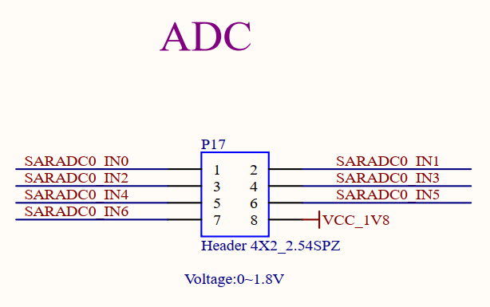
Enter the following command to observe the ADC channel value (range 0-8192):
root@OK1126B-buildroot:/# cat /sys/bus/iio/devices/iio\:device0/in_voltage0_raw
414
root@OK1126B-buildroot:/# cat /sys/bus/iio/devices/iio\:device0/in_voltage1_raw
367
root@OK1126B-buildroot:/# cat /sys/bus/iio/devices/iio\:device0/in_voltage2_raw
319
root@OK1126B-buildroot:/# cat /sys/bus/iio/devices/iio\:device0/in_voltage3_raw
275
root@OK1126B-buildroot:/# cat /sys/bus/iio/devices/iio\:device0/in_voltage4_raw
414
root@OK1126B-buildroot:/# cat /sys/bus/iio/devices/iio\:device0/in_voltage5_raw
367
root@OK1126B-buildroot:/# cat /sys/bus/iio/devices/iio\:device0/in_voltage6_raw
319
4.21 SQLite3 Test
SQLite3 is a lightweight, ACID-compliant relational database management system with a low footprint. The OK1126B-S/OK1126BJ-S board is ported to version 3.44.2 of sqlit3.
root@OK1126B-buildroot:/# sqlite3
SQLite version 3.44.2 2023-11-24 11:41:44
Enter ".help" for usage hints.
Connected to a transient in-memory database.
Use ".open FILENAME" to reopen on a persistent database.
sqlite> create table tbl1 (one varchar(10), two smallint); //Create the table tbl1
sqlite> insert into tbl1 values('hello!',10); //Insert data in tbl1 table
sqlite> insert into tbl1 values('goodbye', 20); //Insert data goodbye|20 in tbl1 table
sqlite> select * from tbl1;//Query the contents of table tbl1
hello!|10
goodbye|20
sqlite> delete from tbl1 where one = 'hello!'; //Delete data
sqlite> select * from tbl1; //Query the contents of table tbl1
goodbye|20
sqlite> .quit //Exit the database (or use the.exit command)
root@OK1126B-buildroot:/#
4.22 4G Test
The OK1126B/OK1126BJ-S supports the 4G module EM05 (connected via USB). Prepare the 4G module adapter board FIT - 4G&5G. Before starting the development board, insert the 4G module EM05 into the adapter board, insert the SIM card into the adapter board, connect the antenna from the adapter board to the EM05 and the antenna on the adapter board, and power the adapter board with a 12V power supply. After powering on the development board, press the “power” button on the adapter board and wait for the green light to turn on.
In the figure, the numerical labels from smallest to largest are: 12V power supply, power button, SIM card, USB cable, and 4G module EM05.

You can execute the “lsusb” command in the debug serial port of the development board to check if the module is recognized.
root@OK1126B-buildroot:/# lsusb
Bus 001 Device 001: ID 1d6b:0002
Bus 001 Device 002: ID 2c7c:0125 #It is the 4G module
Bus 002 Device 001: ID 1d6b:0001
View device node status under /dev
root@OK1126B-buildroot:/# ls /dev/ttyUSB*
/dev/ttyUSB0 /dev/ttyUSB1 /dev/ttyUSB2 /dev/ttyUSB3
After the device is successfully recognized, dial-up Internet access can be tested.
root@OK1126B-buildroot:/# quectelCM &
[01-24_22:58:52:502] Quectel_QConnectManager_Linux_V1.6.0.24
[01-24_22:58:52:504] Find /sys/bus/usb/devices/1-1 idVendor=0x2c7c idProduct=0x125, bus=0x001, dev=0x003
[01-24_22:58:52:504] Auto find qmichannel = /dev/cdc-wdm0
[01-24_22:58:52:505] Auto find usbnet_adapter = wwan0
[01-24_22:58:52:505] netcard driver = qmi_wwan, driver version = 6.1.118
[01-24_22:58:52:505] Modem works in QMI mode
[01-24_22:58:52:513] cdc_wdm_fd = 7
[01-24_22:58:53:514] QmiWwanInit message timeout
[01-24_22:58:55:004] Get clientWDS = 5
[01-24_22:58:55:037] Get clientDMS = 1
[01-24_22:58:55:068] Get clientNAS = 2
[01-24_22:58:55:100] Get clientUIM = 1
[01-24_22:58:55:132] Get clientWDA = 1
[01-24_22:58:55:164] requestBaseBandVersion EM05CNFDR08A03M1G_ND
[01-24_22:58:55:292] requestGetSIMStatus SIMStatus: SIM_READY
[01-24_22:58:55:325] requestGetProfile[1] 3gnet///0
[01-24_22:58:55:357] requestRegistrationState2 MCC: 460, MNC: 1, PS: Attached, DataCap: LTE
[01-24_22:58:55:389] requestQueryDataCall IPv4ConnectionStatus: DISCONNECTED
[01-24_22:58:55:389] ifconfig wwan0 0.0.0.0
[01-24_22:58:55:395] ifconfig wwan0 down
[01-24_22:58:55:453] requestSetupDataCall WdsConnectionIPv4Handle: 0x86d0bbf0
[01-24_22:58:55:581] ifconfig wwan0 up
[01-24_22:58:55:591] busybox udhcpc -f -n -q -t 5 -i wwan0
udhcpc: started, v1.36.1
udhcpc: broadcasting discover
udhcpc: broadcasting discover
udhcpc: broadcasting discover
udhcpc: broadcasting discover
udhcpc: broadcasting discover
udhcpc: no lease, failing
[01-24_22:59:10:869] File:ql_raw_ip_mode_check Line:136 udhcpc fail to get ip address, try next:
[01-24_22:59:10:869] ifconfig wwan0 down
[01-24_22:59:10:880] echo Y > /sys/class/net/wwan0/qmi/raw_ip
[01-24_22:59:10:880] ifconfig wwan0 up
[01-24_22:59:10:889] busybox udhcpc -f -n -q -t 5 -i wwan0
udhcpc: started, v1.36.1
udhcpc: broadcasting discover
udhcpc: broadcasting select for 10.113.84.102, server 10.113.84.101
udhcpc: lease of 10.113.84.102 obtained from 10.113.84.101, lease time 7200
[01-24_22:59:11:069] deleting routers
[01-24_22:59:11:097] adding dns 202.99.160.68
[01-24_22:59:11:097] adding dns 202.99.166.4
After connecting to the network, you can ping domain names.
root@OK1126B-buildroot:/# ping -I wwan0 www.baidu.com -c 3
PING www.a.shifen.com (110.242.69.21) from 10.113.84.102 wwan0: 56(84) bytes of data.
64 bytes from 110.242.69.21: icmp_seq=1 ttl=54 time=67.9 ms
64 bytes from 110.242.69.21: icmp_seq=2 ttl=54 time=39.3 ms
64 bytes from 110.242.69.21: icmp_seq=3 ttl=54 time=34.4 ms
--- www.a.shifen.com ping statistics ---
3 packets transmitted, 3 received, 0% packet loss, time 8805ms
rtt min/avg/max/mdev = 34.399/47.212/67.941/14.793 ms
5. OK1126B Platform Multimedia Test
The application - layer software for audio and video on the OK1126B - S/OK1126BJ - S platform uses GStreamer and supports hardware encoding and decoding. All examples in this section based on the GStreamer command line form. If users need a player with an interface, they can also use qt’s multimedia classes, which also support codecs, see the Qt Tests chapter.
The OK1126B - S/OK1126BJ - S platform has an internal video processing unit (VPU) that supports hardware encoding and decoding of the following video formats:
Video Decoding: H264, H265, maximum support 4K@30fps
Video Encoding: H264, H265, maximum support 12M@30fps
Hardware codec parameter table of OK1126B-S/OK1126BJ-S platform:
Format |
Profile |
Resolution |
Frame rate |
|
|---|---|---|---|---|
Video Encoder |
HEVC |
Level 5.0 High Tier |
12M |
30 fps |
H.264 |
Level 5.0 |
12M |
30 fps |
|
Video Decoder |
H.264 |
yuv400/yuv420/yuv422@L5.1 |
3840x2160 |
30 fps |
H.265 |
yuv420@L5.0 |
3840x2160 |
30 fps |
5.1 Audio and Video Playback
5.1.1 Playing Audio and Video with Gst-play
Gplay is an audio/video player based on GStreamer that can automatically select the right plugin for audio/video play according to the hardware, and it is easy to run.
root@OK1126B-buildroot:/# gst-play-1.0 /userdata/media/1080p_30fps_h265.mp4
//Play the video file with sound, and test the sound played by the speaker
Press 'k' to see a list of keyboard shortcuts.
Now playing /userdata/media/1080p_30fps_h265.mp4
Redistribute latency...
Redistribute latency...
mpp[1903]: mpp_info: mpp version: unknown mpp version for missing VCS info
mpp[1903]: mpp_info: mpp version: unknown mpp version for missing VCS info
mpp[1903]: mpp_info: mpp version: unknown mpp version for missing VCS info
mpp[1903]: mpp: unable to create enc vp8 for soc rv1126b unsupported
mpp[1903]: mpp_info: mpp version: unknown mpp version for missing VCS info
mpp[1903]: mpp_info: mpp version: unknown mpp version for missing VCS info
Redistribute latency...
Redistribute latency...
mpp[1903]: H265D_PARSER: extradata is encoded as hvcC format
mpp[1903]: mpp_buf_slot: mismatch h_stride_by_pixel 1984 - 1920
mpp[1903]: mpp_buf_slot: mismatch h_stride_by_byte 1984 - 1920
mpp[1903]: mpp_buf_slot: mismatch size_total 3856896 - 3732480
mpp[1903]: mpp_buf_slot: mismatch h_stride_by_pixel 1984 - 1920
mpp[1903]: mpp_buf_slot: mismatch h_stride_by_byte 1984 - 1920
mpp[1903]: mpp_buf_slot: mismatch size_total 3856896 - 3732480
Redistribute latency...
5.1.2 Video Playback with Gst-launch
root@OK1126B-buildroot:/# gst-launch-1.0 filesrc location=/userdata/media/1080p_30fps_h265.mp4 ! qtdemux ! queue ! h265parse ! mppvideodec ! waylandsink
//Play video only
mpp[1922]: mpp_info: mpp version: unknown mpp version for missing VCS info
mpp[1922]: mpp_info: mpp version: unknown mpp version for missing VCS info
mpp[1922]: mpp_info: mpp version: unknown mpp version for missing VCS info
mpp[1922]: mpp: unable to create enc vp8 for soc rv1126b unsupported
mpp[1922]: mpp_info: mpp version: unknown mpp version for missing VCS info
Setting pipeline to PAUSED ...
mpp[1922]: mpp_info: mpp version: unknown mpp version for missing VCS info
Pipeline is PREROLLING ...
Redistribute latency...
Redistribute latency...
mpp[1922]: H265D_PARSER: extradata is encoded as hvcC format
mpp[1922]: mpp_buf_slot: mismatch h_stride_by_pixel 1984 - 1920
mpp[1922]: mpp_buf_slot: mismatch h_stride_by_byte 1984 - 1920
mpp[1922]: mpp_buf_slot: mismatch size_total 3856896 - 3732480
mpp[1922]: mpp_buf_slot: mismatch h_stride_by_pixel 1984 - 1920
mpp[1922]: mpp_buf_slot: mismatch h_stride_by_byte 1984 - 1920
mpp[1922]: mpp_buf_slot: mismatch size_total 3856896 - 3732480
Pipeline is PREROLLED ...
Prerolled, waiting for async message to finish...
Setting pipeline to PLAYING ...
Redistribute latency...
New clock: GstSystemClock
[00:04:46.015] seeing the first app
Got EOS from element "pipeline0".
Execution ended after 0:00:30.633824472
Setting pipeline to NULL ...
Freeing pipeline ...
5.1.3 Play ing Audio with Gst-launch
root@OK1126B-buildroot:/# gst-launch-1.0 filesrc location=/userdata/media/test.mp3 ! id3demux ! mpegaudioparse ! mpg123audiodec ! alsasink
//Play the audio only, and the speaker will play the test.
Setting pipeline to PAUSED ...
Pipeline is PREROLLING ...
Redistribute latency...
Pipeline is PREROLLED ...
Prerolled, waiting for async message to finish...
Setting pipeline to PLAYING ...
Redistribute latency...
New clock: GstAudioSinkClock
^Chandling interrupt. (0.8 %)
Interrupt: Stopping pipeline ...
Execution ended after 0:00:02.321717834
Setting pipeline to NULL ...
Freeing pipeline ...
5.1.4 Playing Video and Audio with Gst-launch
root@OK1126B-buildroot:/# gst-launch-1.0 filesrc location=/userdata/media/1080p_30fps_h265.mp4 ! qtdemux name=dec dec. ! queue ! h265parse ! mppvideodec ! waylandsink dec.! queue ! decodebin ! alsasink
//Play the video file with sound, and test the sound played by the speaker
mpp[1960]: mpp_info: mpp version: unknown mpp version for missing VCS info
mpp[1960]: mpp_info: mpp version: unknown mpp version for missing VCS info
mpp[1960]: mpp_info: mpp version: unknown mpp version for missing VCS info
mpp[1960]: mpp: unable to create enc vp8 for soc rv1126b unsupported
mpp[1960]: mpp_info: mpp version: unknown mpp version for missing VCS info
Setting pipeline to PAUSED ...
mpp[1960]: mpp_info: mpp version: unknown mpp version for missing VCS info
Pipeline is PREROLLING ...
Redistribute latency...
Redistribute latency...
mpp[1960]: H265D_PARSER: extradata is encoded as hvcC format
mpp[1960]: mpp_buf_slot: mismatch h_stride_by_pixel 1984 - 1920
mpp[1960]: mpp_buf_slot: mismatch h_stride_by_byte 1984 - 1920
mpp[1960]: mpp_buf_slot: mismatch size_total 3856896 - 3732480
mpp[1960]: mpp_buf_slot: mismatch h_stride_by_pixel 1984 - 1920
mpp[1960]: mpp_buf_slot: mismatch h_stride_by_byte 1984 - 1920
mpp[1960]: mpp_buf_slot: mismatch size_total 3856896 - 3732480
Redistribute latency...
Redistribute latency...
Pipeline is PREROLLED ...
Prerolled, waiting for async message to finish...
Setting pipeline to PLAYING ...
New clock: GstAudioSinkClock
Redistribute latency...
^Chandling interrupt. (24.9 %)
Interrupt: Stopping pipeline ...
Execution ended after 0:00:07.698089754
Setting pipeline to NULL ...
mpp[1960]: H265D_PARSER: extradata is encoded as hvcC format
Freeing pipeline ...
5.2 Video Hardware Encoding
OK1126B-S/OK1126BJ-S supports H.264/H.265 video encoding at up to 12m @ 30fps and high-quality JPEG encoding and decoding.
5.2.1 Video Hardware Encoding H.264
root@OK1126B-buildroot:/# gst-launch-1.0 mp4mux name=mux ! filesink location=test.mp4 videotestsrc num-buffers=600 ! video/x-raw,framerate=60/1,width=1920,height=1080,format=NV12 ! mpph264enc ! h264parse ! mux.video_0 -e
mpp[1974]: mpp_info: mpp version: unknown mpp version for missing VCS info
mpp[1974]: mpp_info: mpp version: unknown mpp version for missing VCS info
mpp[1974]: mpp_info: mpp version: unknown mpp version for missing VCS info
mpp[1974]: mpp: unable to create enc vp8 for soc rv1126b unsupported
mpp[1974]: mpp_info: mpp version: unknown mpp version for missing VCS info
Setting pipeline to PAUSED ...
mpp[1974]: mpp_info: mpp version: unknown mpp version for missing VCS info
mpp[1974]: mpp: Only rk3588's h264/265/jpeg and rk3576's h264/265 encoder can use frame parallel
Pipeline is PREROLLING ...
mpp[1974]: mpp_enc: MPP_ENC_SET_RC_CFG bps 15552000 [14580000 : 16524000] fps [60:60] gop 60
mpp[1974]: h264e_api_v2: MPP_ENC_SET_PREP_CFG w:h [1920:1080] stride [1920:1088]
mpp[1974]: mpp_enc: mode cbr bps [14580000:15552000:16524000] fps fix [60/1] -> fix [60/1] gop i [60] v [0]
Redistribute latency...
Pipeline is PREROLLED ...
Prerolled, waiting for async message to finish...
Setting pipeline to PLAYING ...
Redistribute latency...
New clock: GstSystemClock
Got EOS from element "pipeline0".
EOS received - stopping pipeline...
Execution ended after 0:00:18.377197925
Setting pipeline to NULL ...
Freeing pipeline ...
5.2.2 Video Hardware Encoding H.265
root@OK1126B-buildroot:/# gst-launch-1.0 mp4mux name=mux ! filesink location=test.mp4 videotestsrc num-buffers=600 ! video/x-raw,framerate=60/1,width=1920,height=1080,format=NV12 ! mpph265enc ! h265parse ! mux.video_0 -e
mpp[2007]: mpp_info: mpp version: unknown mpp version for missing VCS info
mpp[2007]: mpp_info: mpp version: unknown mpp version for missing VCS info
mpp[2007]: mpp_info: mpp version: unknown mpp version for missing VCS info
mpp[2007]: mpp: unable to create enc vp8 for soc rv1126b unsupported
mpp[2007]: mpp_info: mpp version: unknown mpp version for missing VCS info
Setting pipeline to PAUSED ...
mpp[2007]: mpp_info: mpp version: unknown mpp version for missing VCS info
mpp[2007]: mpp: Only rk3588's h264/265/jpeg and rk3576's h264/265 encoder can use frame parallel
Pipeline is PREROLLING ...
mpp[2007]: mpp_enc: MPP_ENC_SET_RC_CFG bps 15552000 [14580000 : 16524000] fps [60:60] gop 60
mpp[2007]: h265e_api: h265e_proc_prep_cfg MPP_ENC_SET_PREP_CFG w:h [1920:1080] stride [1920:1088]
mpp[2007]: mpp_enc: mode cbr bps [14580000:15552000:16524000] fps fix [60/1] -> fix [60/1] gop i [60] v [0]
Redistribute latency...
Pipeline is PREROLLED ...
Prerolled, waiting for async message to finish...
Setting pipeline to PLAYING ...
Redistribute latency...
New clock: GstSystemClock
Got EOS from element "pipeline0".
EOS received - stopping pipeline...
Execution ended after 0:00:18.489412842
Setting pipeline to NULL ...
Freeing pipeline ...
5.3 Video Hardware Decoding
The OK1126B-S/OK1126BJ-S supports H264, H265 video hardware decoding, and the H264 decoder supports 4K@30fps, and the H265 decoder supports 4K@30fps.
The OK1126B-S/OK1126BJ-S uses mppvideodec component for video hardware decoding, and its output formats are NV12, I420, YV12.
5.3.1 Decoding and Playing H.264 Format Video
root@OK1126B-buildroot:/# gst-launch-1.0 filesrc location=/userdata/media/1080p_60fps_h264.mp4 ! qtdemux ! h264parse ! mppvideodec ! waylandsink
mpp[2020]: mpp_info: mpp version: unknown mpp version for missing VCS info
mpp[2020]: mpp_info: mpp version: unknown mpp version for missing VCS info
mpp[2020]: mpp_info: mpp version: unknown mpp version for missing VCS info
mpp[2020]: mpp: unable to create enc vp8 for soc rv1126b unsupported
mpp[2020]: mpp_info: mpp version: unknown mpp version for missing VCS info
Setting pipeline to PAUSED ...
mpp[2020]: mpp_info: mpp version: unknown mpp version for missing VCS info
Pipeline is PREROLLING ...
Redistribute latency...
Redistribute latency...
mpp[2020]: h264d_api: is_avcC=1
mpp[2020]: mpp_buf_slot: mismatch h_stride_by_pixel 1984 - 1920
mpp[2020]: mpp_buf_slot: mismatch h_stride_by_byte 1984 - 1920
mpp[2020]: mpp_buf_slot: mismatch size_total 3237888 - 4177920
mpp[2020]: mpp_buf_slot: mismatch h_stride_by_pixel 1984 - 1920
mpp[2020]: mpp_buf_slot: mismatch h_stride_by_byte 1984 - 1920
mpp[2020]: mpp_buf_slot: mismatch size_total 3237888 - 4177920
Pipeline is PREROLLED ...
Prerolled, waiting for async message to finish...
Setting pipeline to PLAYING ...
Redistribute latency...
New clock: GstSystemClock
^Chandling interrupt. (12.3 %)
Interrupt: Stopping pipeline ...
Execution ended after 0:00:07.631453212
Setting pipeline to NULL ...
Freeing pipeline ...
5.3.2 Decoding and Playing H264 Format Video with Audio
root@OK1126B-buildroot:/# gst-launch-1.0 filesrc location=/userdata/media/1080p_60fps_h264.mp4 ! qtdemux name=demux demux.video_0 ! queue ! h264parse ! mppvideodec ! waylandsink demux.audio_0 ! queue ! aacparse ! faad ! alsasink
mpp[2031]: mpp_info: mpp version: unknown mpp version for missing VCS info
mpp[2031]: mpp_info: mpp version: unknown mpp version for missing VCS info
mpp[2031]: mpp_info: mpp version: unknown mpp version for missing VCS info
mpp[2031]: mpp: unable to create enc vp8 for soc rv1126b unsupported
mpp[2031]: mpp_info: mpp version: unknown mpp version for missing VCS info
Setting pipeline to PAUSED ...
mpp[2031]: mpp_info: mpp version: unknown mpp version for missing VCS info
Pipeline is PREROLLING ...
Redistribute latency...
Redistribute latency...
mpp[2031]: h264d_api: is_avcC=1
Redistribute latency...
Redistribute latency...
mpp[2031]: mpp_buf_slot: mismatch h_stride_by_pixel 1984 - 1920
mpp[2031]: mpp_buf_slot: mismatch h_stride_by_byte 1984 - 1920
mpp[2031]: mpp_buf_slot: mismatch size_total 3237888 - 4177920
mpp[2031]: mpp_buf_slot: mismatch h_stride_by_pixel 1984 - 1920
mpp[2031]: mpp_buf_slot: mismatch h_stride_by_byte 1984 - 1920
mpp[2031]: mpp_buf_slot: mismatch size_total 3237888 - 4177920
Pipeline is PREROLLED ...
Prerolled, waiting for async message to finish...
Setting pipeline to PLAYING ...
New clock: GstAudioSinkClock
Redistribute latency...
^Chandling interrupt. (6.6 %)
Interrupt: Stopping pipeline ...
Execution ended after 0:00:04.045597501
Setting pipeline to NULL ...
Freeing pipeline ...
5.3.3 Decoding and Playing H.265 Format Video
root@OK1126B-buildroot:/# gst-launch-1.0 filesrc location=/userdata/media/1080p_30fps_h265.mp4 ! qtdemux ! h265parse ! mppvideodec ! waylandsink
mpp[2045]: mpp_info: mpp version: unknown mpp version for missing VCS info
mpp[2045]: mpp_info: mpp version: unknown mpp version for missing VCS info
mpp[2045]: mpp_info: mpp version: unknown mpp version for missing VCS info
mpp[2045]: mpp: unable to create enc vp8 for soc rv1126b unsupported
mpp[2045]: mpp_info: mpp version: unknown mpp version for missing VCS info
Setting pipeline to PAUSED ...
mpp[2045]: mpp_info: mpp version: unknown mpp version for missing VCS info
Pipeline is PREROLLING ...
Redistribute latency...
Redistribute latency...
mpp[2045]: H265D_PARSER: extradata is encoded as hvcC format
mpp[2045]: mpp_buf_slot: mismatch h_stride_by_pixel 1984 - 1920
mpp[2045]: mpp_buf_slot: mismatch h_stride_by_byte 1984 - 1920
mpp[2045]: mpp_buf_slot: mismatch size_total 3856896 - 3732480
mpp[2045]: mpp_buf_slot: mismatch h_stride_by_pixel 1984 - 1920
mpp[2045]: mpp_buf_slot: mismatch h_stride_by_byte 1984 - 1920
mpp[2045]: mpp_buf_slot: mismatch size_total 3856896 - 3732480
Pipeline is PREROLLED ...
Prerolled, waiting for async message to finish...
Setting pipeline to PLAYING ...
New clock: GstSystemClock
Redistribute latency...
^Chandling interrupt. (11.5 %)
Interrupt: Stopping pipeline ...
Execution ended after 0:00:03.538232585
Setting pipeline to NULL ...
Freeing pipeline ...
5.3.4 Decoding and Playing H265 Format Video with Audio
root@OK1126B-buildroot:/# gst-launch-1.0 filesrc location=/userdata/media/1080p_30fps_h265.mp4 ! qtdemux name=demux demux.video_0 ! queue ! h265parse ! mppvideodec ! waylandsink demux.audio_0 ! queue ! aacparse ! faad ! alsasink
mpp[2056]: mpp_info: mpp version: unknown mpp version for missing VCS info
mpp[2056]: mpp_info: mpp version: unknown mpp version for missing VCS info
mpp[2056]: mpp_info: mpp version: unknown mpp version for missing VCS info
mpp[2056]: mpp: unable to create enc vp8 for soc rv1126b unsupported
mpp[2056]: mpp_info: mpp version: unknown mpp version for missing VCS info
Setting pipeline to PAUSED ...
mpp[2056]: mpp_info: mpp version: unknown mpp version for missing VCS info
Pipeline is PREROLLING ...
Redistribute latency...
Redistribute latency...
Redistribute latency...
Redistribute latency...
mpp[2056]: H265D_PARSER: extradata is encoded as hvcC format
mpp[2056]: mpp_buf_slot: mismatch h_stride_by_pixel 1984 - 1920
mpp[2056]: mpp_buf_slot: mismatch h_stride_by_byte 1984 - 1920
mpp[2056]: mpp_buf_slot: mismatch size_total 3856896 - 3732480
mpp[2056]: mpp_buf_slot: mismatch h_stride_by_pixel 1984 - 1920
mpp[2056]: mpp_buf_slot: mismatch h_stride_by_byte 1984 - 1920
mpp[2056]: mpp_buf_slot: mismatch size_total 3856896 - 3732480
Pipeline is PREROLLED ...
Prerolled, waiting for async message to finish...
Setting pipeline to PLAYING ...
Redistribute latency...
New clock: GstAudioSinkClock
^Chandling interrupt. (10.1 %)
Interrupt: Stopping pipeline ...
Execution ended after 0:00:03.158455085
Setting pipeline to NULL ...
mpp[2056]: H265D_PARSER: extradata is encoded as hvcC format
mpp[2056]: H265D_PARSER: extradata is encoded as hvcC format
mpp[2056]: H265D_PARSER: extradata is encoded as hvcC format
Freeing pipeline ...
5.4 Camera Test
The OK1126B-S/OK1126BJ-S supports OV13850 MIPI camera.
5.4.1 OV13850 Test
5.4.1.1 Camera Recognition Detection and Format Support Queries
root@OK1126B-buildroot:/# v4l2-ctl --list-devices
//View the device node
rkaiisp (platform: rkaiisp):
/dev/video0
rkisp-statistics (platform: rkisp):
/dev/video28
/dev/video29
/dev/video36
/dev/video37
rkaiisp0 (platform:rkaiisp-vir0):
/dev/media0
rkcif (platform:rkcif-mipi-lvds):
/dev/video1
/dev/video2
/dev/video3
/dev/video4
/dev/video5
/dev/video6
/dev/video7
/dev/video8
/dev/video9
/dev/video10
/dev/video11
/dev/media1
rkcif (platform:rkcif-mipi-lvds2):
/dev/video12
/dev/video13
/dev/video14
/dev/video15
/dev/video16
/dev/video17
/dev/video18
/dev/video19
/dev/video20
/dev/video21
/dev/video22
/dev/media2
rkisp_mainpath (platform:rkisp-vir0):
/dev/video23
/dev/video24
/dev/video25
/dev/video26
/dev/video27
/dev/video30
/dev/media3
rkisp_mainpath (platform:rkisp-vir1):
/dev/video31
/dev/video32
/dev/video33
/dev/video34
/dev/video35
/dev/video38
/dev/media4
rkvpss_scale0 (platform:rkvpss-vir0):
/dev/video40
/dev/video41
/dev/video42
/dev/video43
/dev/video44
/dev/video45
/dev/media5
rkvpss_scale0 (platform:rkvpss-vir1):
/dev/video46
/dev/video47
/dev/video48
/dev/video49
/dev/video50
/dev/video51
/dev/media6
root@OK1126B-buildroot:/# v4l2-ctl --list-formats-ext -d /dev/video23
//View the formats and resolutions supported by the camera
ioctl: VIDIOC_ENUM_FMT
Type: Video Capture Multiplanar
[0]: 'UYVY' (UYVY 4:2:2)
Size: Stepwise 32x32 - 2112x1568 with step 8/8
[1]: 'NV16' (Y/UV 4:2:2)
Size: Stepwise 32x32 - 2112x1568 with step 8/8
[2]: 'NV61' (Y/VU 4:2:2)
Size: Stepwise 32x32 - 2112x1568 with step 8/8
[3]: 'NV21' (Y/VU 4:2:0)
Size: Stepwise 32x32 - 2112x1568 with step 8/8
[4]: 'NV12' (Y/UV 4:2:0)
Size: Stepwise 32x32 - 2112x1568 with step 8/8
[5]: 'NM21' (Y/VU 4:2:0 (N-C))
Size: Stepwise 32x32 - 2112x1568 with step 8/8
[6]: 'NM12' (Y/UV 4:2:0 (N-C))
Size: Stepwise 32x32 - 2112x1568 with step 8/8
[7]: 'GREY' (8-bit Greyscale)
Size: Stepwise 32x32 - 2112x1568 with step 8/8
[8]: 'TIL2' (Rockchip yuv422 tile)
Size: Stepwise 32x32 - 2112x1568 with step 8/8
[9]: 'TIL0' (Rockchip yuv420 tile)
Size: Stepwise 32x32 - 2112x1568 with step 8/8
5.4.1.2 Camera Preview
root@OK1126B-buildroot:/# gst-launch-1.0 v4l2src device=/dev/video23 ! video/x-raw, format=NV12, width=640, height=480, framerate=30/1 ! waylandsink
//Camera preview
Setting pipeline to PAUSED ...
Pipeline is live and does not need PREROLL ...
Setting pipeline to PLAYING ...
New clock: GstSystemClock //The camera preview can be seen on the screen
^C //Ctrl+C Exit the camera preview
handling interrupt.
Interrupt: Stopping pipeline ...
Execution ended after 0:00:02.667462376
Setting pipeline to PAUSED ...
Setting pipeline to READY ...
Setting pipeline to NULL ...
Freeing pipeline ...
5.4.1.3 Camera to Take Pictures
root@OK1126B-buildroot:/# gst-launch-1.0 v4l2src device=/dev/video23 num-buffers=1 ! video/x-raw,format=NV12,width=640,height=480 ! mppjpegenc ! filesink location=pic.jpg
//Camera to take pictures
Setting pipeline to PAUSED ...
mpi: mpp version: Without VCS info
mpp_rt: NOT found ion allocator
mpp_rt: found drm allocator
[ 138.542571] rk_vcodec: vpu_service_ioctl:2138: error: unknown vpu service ioctl cmd 40086c01
Pipeline is live and does not need PREROLL ...
Setting pipeline to PLAYING ...
New clock: GstSystemClock
Got EOS from element "pipeline0".
Execution ended after 0:00:00.175951625
Setting pipeline to PAUSED ...
Setting pipeline to READY ...
Setting pipeline to NULL ...
Freeing pipeline ...
root@OK1126B-buildroot:/# ls
//查看是否生成pic.jpg，可拷贝到pc查看
bin data etc klogd.pid lib64 lost+found mnt opt proc root sbin syslogd.pid target tmp usr vendor
busybox.fragment dev info lib linuxrc media oem pic.jpg rockchip-test run sys system userdata var
5.4.1.4 Recording H264 Format Video
root@OK1126B-buildroot:/# gst-launch-1.0 v4l2src device=/dev/video23 num-buffers=100 ! video/x-raw,format=NV12, width=640,height=480 ! tee name=t ! queue ! mpph264enc ! queue ! h264parse ! qtmux ! filesink location=13850_h264.mp4 t. ! queue ! waylandsink
//Encode H264 during camera preview
Setting pipeline to PAUSED ...
mpi: mpp version: Without VCS info
mpp_rt: NOT found ion allocator
mpp_rt: found drm allocator
[ 208.941566] rk_vcodec: vpu_service_ioctl:2138: error: unknown vpu service ioctl cmd 40086c01
Pipeline is live and does not need PREROLL ...
Setting pipeline to PLAYING ...
New clock: GstSystemClock
h264e_api: h264e_config MPP_ENC_SET_RC_CFG bps 1152000 [1080000 : 1224000]
Got EOS from element "pipeline0".
Execution ended after 0:00:03.504855085
Setting pipeline to PAUSED ...
Setting pipeline to READY ...
Setting pipeline to NULL ...
Freeing pipeline ...
root@OK1126B-buildroot:/# ls
//Check to see if an H264 file is generated
13850_h264.mp4 data info lib64 media opt rockchip-test sbin system tmp var
bin dev klogd.pid linuxrc mnt pic.jpg root sys target userdata vendor
busybox.fragment etc lib lost+found oem proc run syslogd.pid usr
5.4.1.5 Playing H264 Format Video
root@OK1126B-buildroot:/# gst-launch-1.0 filesrc location=13850_h264.mp4 ! qtdemux ! queue ! h264parse ! mppvideodec ! waylandsink
//Play the H264 video
Setting pipeline to PAUSED ...
mpi: mpp version: Without VCS info
Pipeline is PREROLLING ...
mpp_rt: NOT found ion allocator
mpp_rt: found drm allocator
[ 245.867304] rk_vcodec: vpu_service_ioctl:2138: error: unknown vpu service ioctl cmd 40086c01
mpp: deprecated block control, use timeout control instead
Pipeline is PREROLLED ...
Setting pipeline to PLAYING ...
New clock: GstSystemClock
Got EOS from element "pipeline0".
Execution ended after 0:00:03.328286793
Setting pipeline to PAUSED ...
Setting pipeline to READY ...
Setting pipeline to NULL ...
Freeing pipeline ...
5.5 Waylandsink Point Test
The test display part of this chapter uses the waylandsink plug-in in gstreamer. By default, the video or Camera window pops up randomly on the desktop. If you need it to display to a specific location, you can specify the coordinate parameters.
Coordinates (0,0), width 320, height 240.
root@OK3568-buildroot:/#
gst-launch-1.0 filesrc location=/userdata/media/1080p_30fps_h265.mp4 ! qtdemux ! h265parse ! mppvideodec ! waylandsink "render-rectangle=<0,0,480,360>"
6. System Flashing
6.1 OTG System Flashing
6.1.1 OTG Driver Installation
Path：OK1126B-S（Linux）user information\Linux\tool\DriverAssitant_v5.13.zip
Extract the above path file to any directory and run it with administrator privileges
Open DriverInstall.exe.

Click “Driver Installation”.

6.1.2 OTG Full Flashing Test
6.1.2.1 RKDevTool Flashing Test
Path: OK1126B-S（Linux）user information\Linux\tool\RKDevTool_Release_v3.37.zip
This is a development tool provided by Rockchip. Before use, decompress it to the full English path, connect the development board and the host with the Type-C cable, press the UPDATE key of the development board and do not release it, then press the RESET key to reset the system, and release the UPDATE key after about two seconds. There will be prompts on the Rockchip development tool: MASKROM device found
Note:
The operation of the identification device is that the UPDATE button is pressed when the development board is powered on;
Theoretically, Rockchip development tools have no requirements for the unzip directory. However, some users have feedback that the unzip directory should be in full English. If the tool doesn’t match the following figure, please consider unzipping it in an English directory;
Pay attention to two points during OTG programming: 1. Link the OTG line. 2. When OTG and USB3.0 are multiplexed, the DIP switch needs to be modified.
Open the Rockchip development tool:

Click the “Upgrade Firmware” tab, click the “Firmware” button to select the full upgrade image update.img. The program will be parsing the firmware, so wait a while.

Click the “Upgrade Firmware” button-> “Upgrade” to upgrade.
6.1.2.2 Factory Tool Flashing Test
FactoryTool is a tool used for batch OTG programming in the factory. It doesn’t need to read the image and supports batch programming. Additionally, it can program some large - sized image files. If RKDevTool fails to meet the compatibility requirements, you can also try using FactoryTool. Before use, extract it to a path with only English characters. Connect the development board to the host with a Type - C cable. Keep pressing the UPDATE button on the development board, then press the RESET button to reset the system. Release the UPDATE button after about two seconds. There will be prompts on the Rockchip development tool: MASKROM device found.
Note:
The operation of the identification device is that the UPDATE button is pressed when the development board is powered on;
Theoretically, Rockchip development tools have no requirements for the unzip directory. However, some users have feedback that the unzip directory should be in full English. If the tool doesn’t match the following figure, please consider unzipping it in an English directory.
Open the Rockchip development tool:

Click to select the firmware, and click “Start”. At this time, the identified MASKROM device will automatically start programming.

Download firmware:

If the upgrade is successful, the system will restart, and it needs to be powered on again, as shown below:

6.1.3 OTG Step-by-step Flashing Test
In the development phase, it is very time-consuming to burn all of them every time, so here is the method of using OTG burning tool to burn in separate partitions.
Note: The operation of the identification device is that the UPDATE button is pressed when the development board is powered on.
First, after the OK1126B-S-linux-release is compiled, a separate partition image can be found in the rockdev directory.
Take separate programming boot.img (including device tree and startup logo) as an example to demonstrate the programming method.
Use the Type-C cable to connect the development board to the host. After the development board is started, execute the reboot loader, or press and hold the Ctrl + D key during power-on until the system prompts that the LOADER device is found.
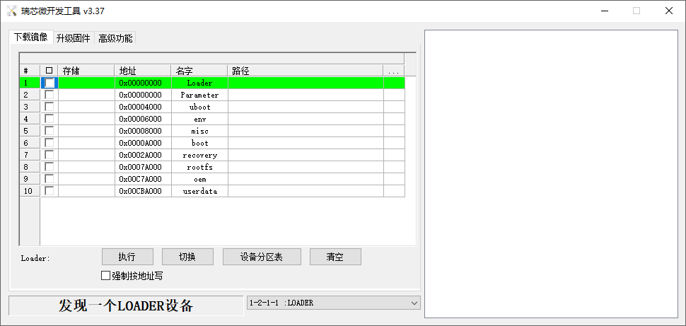
Click the “Device Partition Table” button to automatically read the partition address.
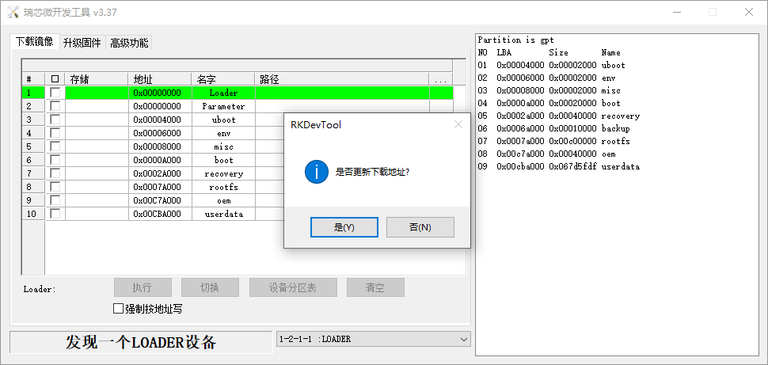
The prompt asks if you want to update the download address. Clicking “Yes” will result in a successful reading of the partition table.

Click the right test area of the partition to select the partition mirror, and check the partition.

Click the “Execute” button will automatically burn and restart.

Introduction to MASKROM mode
If the LOADER is damaged and cannot enter the LOADER mode, press and hold the UPDATE key and then press the reset key to enter the MASKROM mode for programming.
At this time, the system will prompt that a MASKROM device is found. The programming process is consistent with the LOADER mode. It is better to use the update. img for programming.
Note: Don’t click “Device Partition Table” in maskrom mode, it is invalid.
6.2 TF Card Flashing
TF Card Creation and Flashing Test
Note: After testing, the maximum capacity of TF card is 16G, and the TF card of 32G and above may fail to be burned.
Copy SDDiskTool_v1.78.zip from the user profile tools directory to any directory on windows. Run SD_Firmware_Tool.exe with administrator privileges.
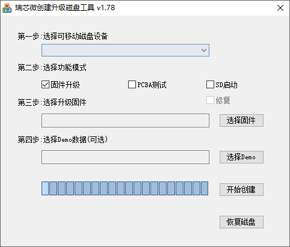
Select the disk device, check “Firmware Upgrade” and select update.img. Click “Start Creating”.
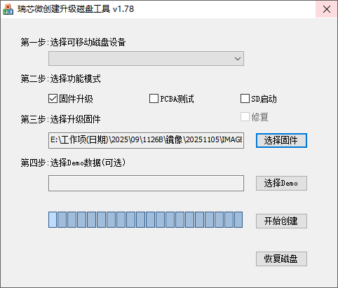
Insert the TF card into the development board and start, the system will automatically enter the flashing process. When the flashing is complete, both the screen and the serial port will prompt:
Please remove SD CARD!!!, wait for reboot.
At this time, pull out the TF card, the system automatically restarts (please do not power down directly).
If removing the TF does not automatically reboot, a manual reboot will also complete the burn. As shown in the figure above, the burning process takes about 7 minutes. Please wait patiently during the burning process.